Dispute entre Jacquemart et les portes du pont
Sur leur prééminence, décidée par Jeannot et Tonnot, à l'ayde d'un voyageur
Click a manuscript image to enlarge it. Cliquez sur une image du manuscrit pour l’agrandir.
Hover over, focus, or tap a dotted passage to display its critical note. Z = BMB Ms Z 428. Survolez, sélectionnez au clavier ou touchez un passage en pointillé pour afficher sa note critique. Z = BMB Ms Z 428.
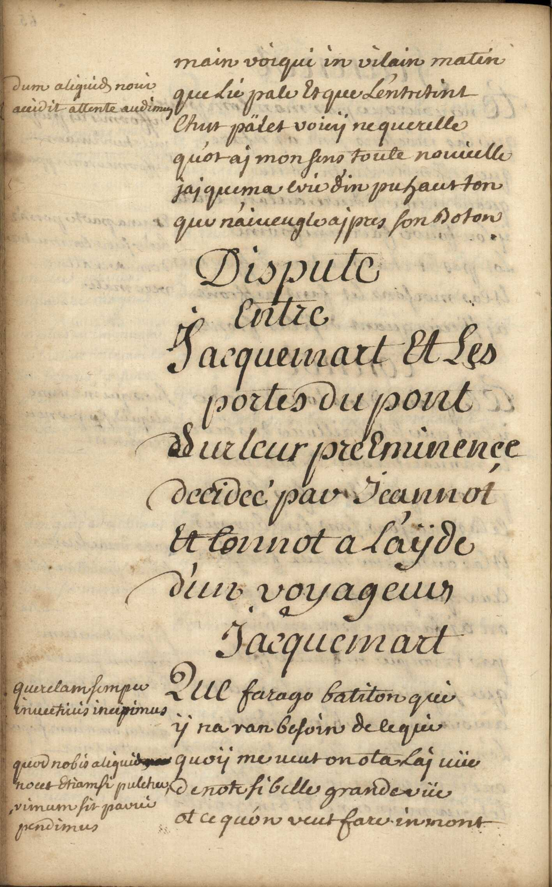
main uoiqui in uilain matin
que lié pale et que l'entretint
chut päler uoicÿ ne querelle
qu'ot ai mon sens toute nouicelle
jaiquema crie d'in pu haut ton
que n'aiueugle aipres son boton.
Dispute entre Jacquemart et les portes du pont sur leur preeminence decidée par Jeannot et Tonnot a l'aÿde d'un uoyageur
Jacquemart
Que farago batiton qui
ÿ na ran besoin de ce qui
quoÿ me ueut on ota lai uüe
de note si belle grande rüe
ot ce qu'on veut fare in mont
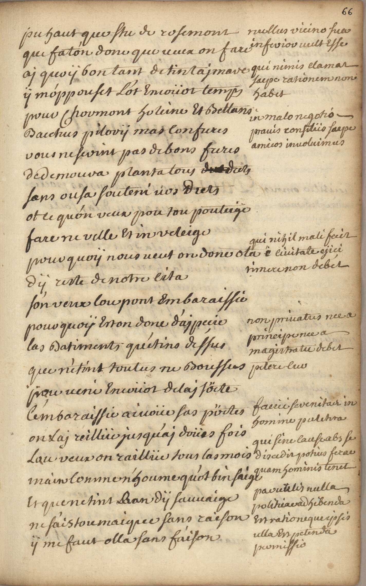
pu haut que stu de rosemont
que fa t'on donc que ueux on fare
ai quoÿ bon tant de tintaimare
ÿ m'oppouser l'ot encoüot temps
pour choumont holeine et bettans
Bacchus Pilorÿ mas confures
uous ne serint pas de bons fures
de demoura planta tous drets
sans ousa souteni uos drets
ot ce qu'on ueux pou tou pouteige
fare ne uelle et in ueleige
pourquoÿ nous ueut on donc ota
dÿ reste de notre cita
s'on ueux lou pont embaraissie
pourquoÿ est on d'aipecie
las batiments qu'etins dessus
que n'etint tordus ne boussus
pou ueni encoüot de lai söete
l'embaraissie aiuoüe sas pöetes
on lai reillüe jusqu'ai doües fois
lou ueux on raillüe tous las mois
main comme n'houme qu'ot bin saige
et que netint ran dÿ sauvaige
ne saistoumai que sans raison
ÿ me faut olla sans faison
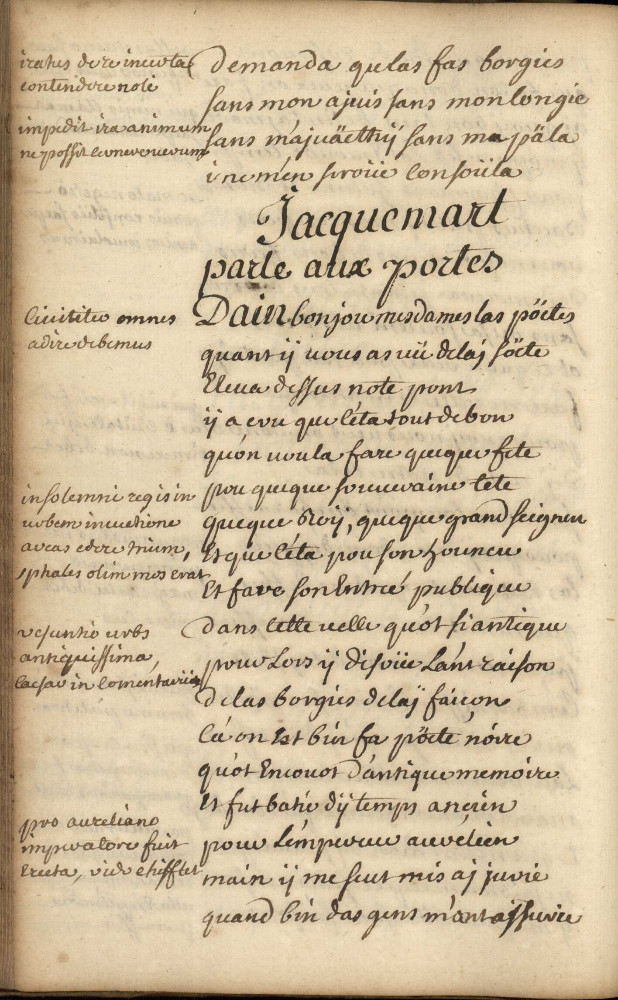
demanda qu las fas borgie
sans mon aiuis sans mon longie
sans m'aiuäethÿ sans ma päla
i ne m'en seroüe consoüla
Jacquemart parle aux portesante 35 add. didasc. Z : Jacquemart parle aux portes (et leur demande qui les fait batir, pourquoy on les batit, de maniere qu'elles luy empechent et luy otent la uüe de la grande rüe ?)
Dain boujou mesdames las poëtes
quant ÿ uous as uü delai söete
eleua dessus note pont
ÿ a cru que c'eta tout de bon
qu'on uoula fare queque fete
pou queque souueraine tete
queque Roÿ, queque grand seigneur
et que c'eta pou son houneu
et fare son entré publique
dans cette uelle qu'ot si antique
pour lors ÿ disoüe l'ans raison
de las borgies de laï faiçon
ca' on est bin fa pöete noire
qu'ot encouot d'antique memoire
et fut batie dÿ temps ancien
pour l'empereur aurelien
main ÿ me scut mis ai jurie
quand bin das gens m'ont aissurie
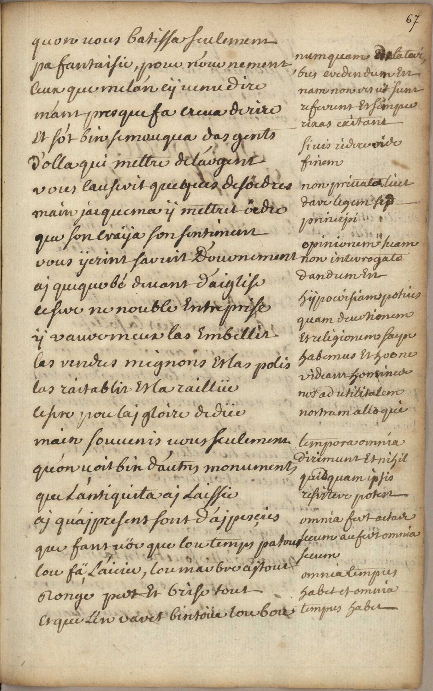
quon uous batissa seulemen
pa fantaisie, pou n'ornement
ceux que me l'an cÿ uenu dire
m'ant presque fa creua de rire
et s'ot bin se mouqua das gents
d'olla qui mettre de l'argent
uous causerit queques desöedres
main jaiquema ÿ mettret öedro
que son craÿa son sentiment
uous ÿrint saruit d'ournement
ai queque bé deuant d'aiglise
ce fere ne nouble entreprise
ÿ uaure meux las embellir
las rendres mignons et las polir
lai raitablir et la raillüe
ce sure pou lai gloire de düe
main souuenir uous seulement
qu'on uoit bin d'autres monuments
que l'antiquita ai laissie
ai qu'aipre sens sont d'aiperçies
que fant uöe que loutemps patout
lou fä l'aicier, lou marbre ai tout
ronge peut et grise tout
et que l'en uaret bientoüe lou bou75–76 om. Z
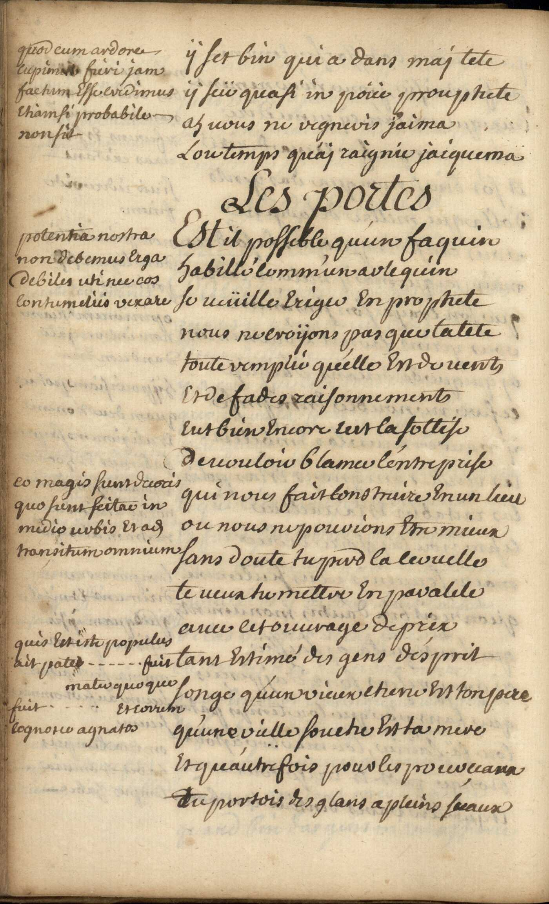
ÿ set bin qui a dans mai tete
ÿ scü quasi in poüe prouphete
ah uous ne regneris jaima
loutemps qu'ai raignie jaiquema
Les portes
Est il posseble qu'un faquin
habillé comm'un arlequin
se ueüille eriger en prophete
nous ne croÿons pas que ta tete
toute remplie qu'elles est de uents
et de fades raisonnements
eut bien encore eut la sottise
de uouloir blamer l'entreprise
qui nous fait construire en un lieu
ou nous ne pourion etre mieux
sans doute tu perd la ceruelle
te ueux tu mettre en paralele
auec let ouurage de prix
tant estimé des gens d'esprit
songe qu'un uieux chene est ton pere
qu'une uielle souche est ta mere
et qu'autrefois pour les pourceaux
tu portois des glans a pleins sceaux
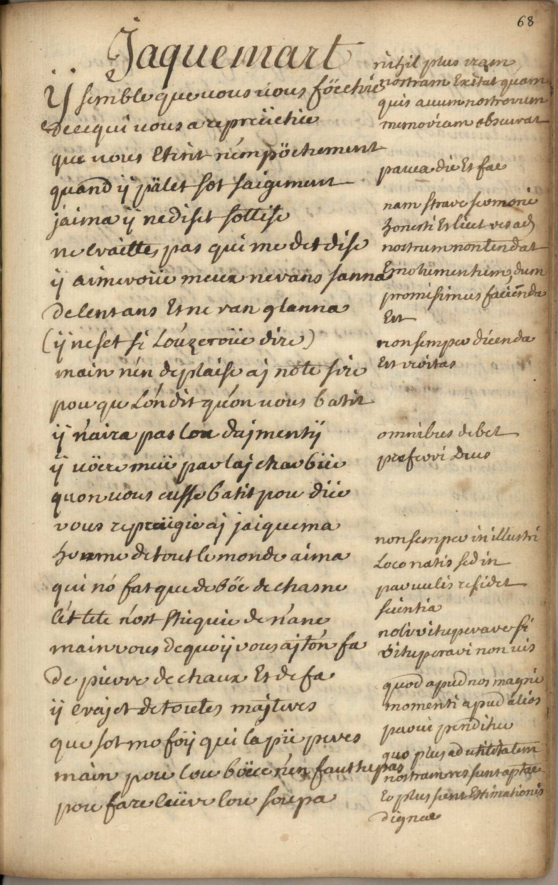
Jaquemart
ÿ semble que uous uous föechies
de ce qui uous a repreüchie
que uous etint n'empöchement
quand ÿ pälet sot saigement
jaima ÿ ne diset sottise
ne craittes pas qui me det dise
ÿ aimeroüe meux ne rans sanna
de cent ans et ne ran glanna
(ÿ ne set si l'ouzeroüe dire)
main n'en deplaise ai note sire
pouqu l'on dit qu'on uous batit
ÿ uöere meü parlai charbüe
qu'on uous eusse batit pour düe
uous repreügie ai jaiquema
humme de tout le monde aima
qui n'o fat que de böe de chasne
c'et tete n'est stiquie de n'ane
main uous de quoÿ uous ai t'on fa
de pierre de chaux et de fa
ÿ craiet de toutes maiteres
que sot mo foÿ qui la pü peres
main pou lou boëce n'en faut tu pas
pou fare cuire lou soupa.
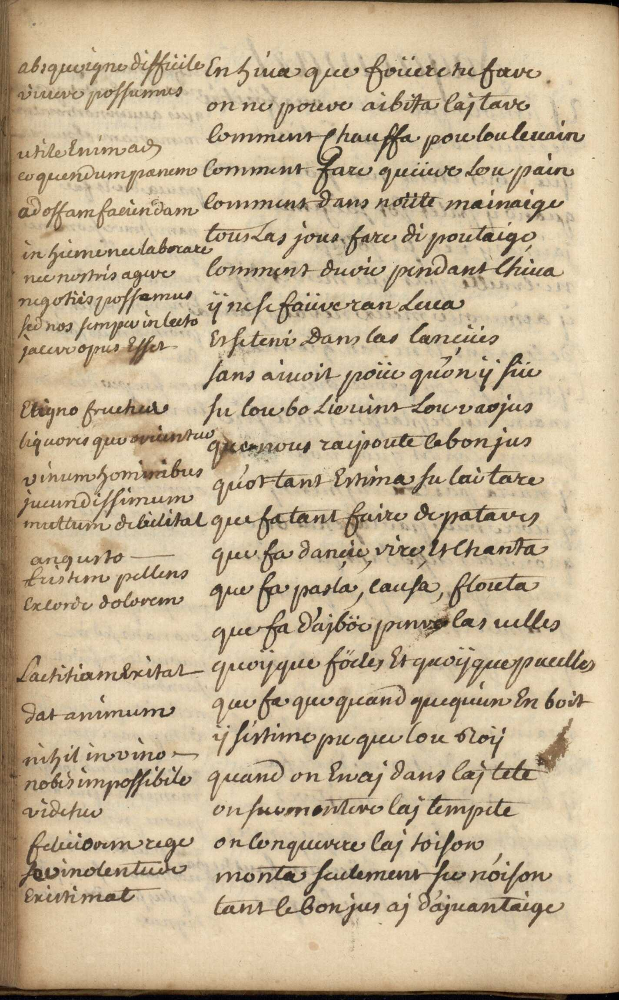
En hiua que foüere tu fare
on ne poure aibita lai tare
comment chaffa pou lou leuain
comment fare quüere lou pain
comment dans noüte mainaige
tous las jous fare di poutaige
comment durie pendant lhiua
ÿ ne se faüre ran leua
et se teni dans las lançües
sans aiuoit poüe qu'on ÿ süe
su lou bo lie uint lore uarjus
que nous raipoute ce bon jus
qu'ot tant estima su lai tare
que fa tant faire de patares
que fa dancie, rire, et chanta
que fa pasla, causa, flouta
que fa d'aiböe penre las uelles
quoÿque föeles et quoÿ que pucelles
que fa que quand quequ'un en boit
ÿ s'estime preque lou roÿ
quand on en ai dans lai tete
on surmontere lai tempete
on conquerere lai toison
montas seulement su n'oison
tant le bon jus ai d'aiuantaige
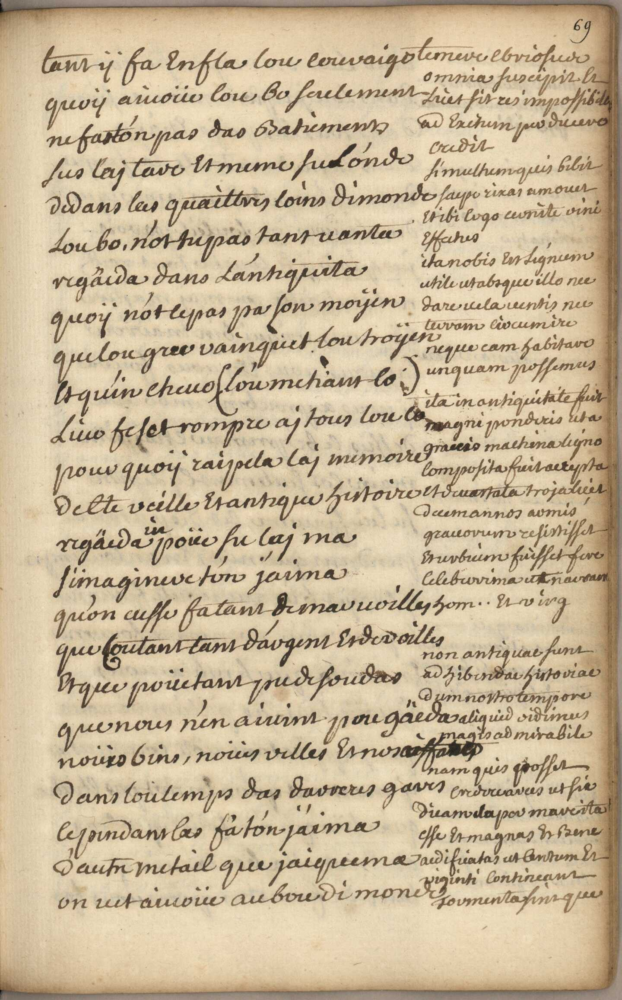
tant ÿ fa enfla lou couraiges
quoÿ aiuoüe lou bo seulement
ne fast'on pas das batiements
sur lai tare et meme su l'onde
dedans las quaittres coins dimonde
lou bo, n'ot tu pas tant uanta
regäeda dans l'antiquita
quoÿ n'ot cepas par son moÿen
que lou greu uainquet lou troÿen
et qu'in cheuo (l'ou mechiant co)
liu feset rompre ai tous lore co
pour quoÿ raipela lai memoire
delte veille et antique histoire
regäeda poüe su lai ma
s'imaginere t'on j'aima
qu'on eusse fa tant de marueilles
que coutant tant d'argent et de uoilles
et que poüetant pu de soudas
que nous n'en aiuint pou gäeda
noüs bin, noüs uilles et no aiffares
dans lou temps das darreres gares
cepindant las fa t'on j'aima
d'autre me tail que jaiquema
on uet aiuoüe au boue di monde
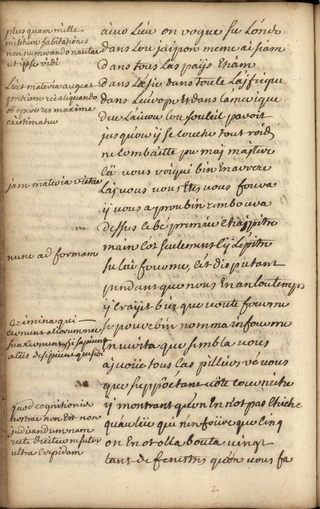
aiue lieu on uogue sie l'onde
dans lou jaipon meme ai siam
dans tous las pays etiam
dans l'asie dans toute l'aifrique
dans l'europe et dans l'amerique
due l'ai uou lou souleil paroit
jusq'ou ÿ se couche tout roid
ne combaitte pu mai maitere
cä uous uoiqui bin en arrere
lai uous uous etes uous foura
ÿ uous a prou bin remboura
dessus ce bé premier chaipitre
main c'ot seulement cÿ l'epitre
su lui fourme, c'et disputant
pendant que nous en an loutemps
ÿ craÿet bin que uoute fourme
se pouure bin nomma infourme
en uerita que sembla uous
ai uoüe tous ças pilliers ué uous
que suppöetant uöte courniche
ÿ montrant qu'on en n'ot pas chiche
qu'au lüe qui n'en foüre que cinq
on en ot olla bouta uingt
tant de fenestres qu'on vous fa
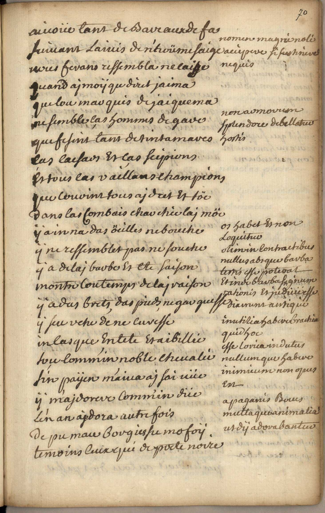
aiuoüe tant de bareaux de far
suiuant laiuis de n'houme saige
uous ferans ressembla ne caige
quand ai moÿ qu diret jaima
que lou marquis de jaiquema
ne semble ças hommes de gare
que fesint tant de tintamares
ças caesar et cas scipions
et tous las uaillans champions
que courint tous ai dret et töe
dans las combais charchie lai möe
ÿ a in na das öeilles ne bouche
ÿ ne ressemblet pas ne souche
ÿ a delai barbe et cete saison
montre lou temps de lai raison
ÿ a das brets, das pieds, ne garguesse
ÿ seu uetu de ne curesse
in casque en tete et aibillie
tou comm'in noble cheualie
sin paÿen m'aiua ai sai uüe
ÿ m'aidorere comm'in düe
l'en an aidora autrefois
de pu mau borgies su mo foÿ
temoins ceux qui de poete noire
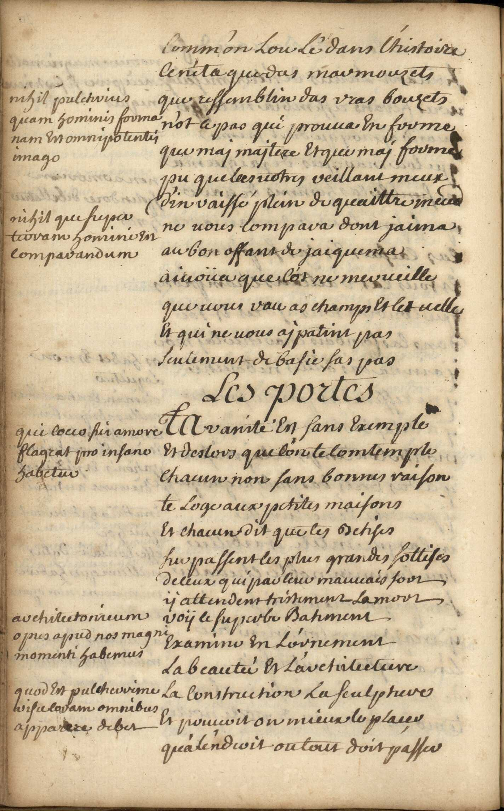
comm'on lou li dans l'histoire
ce n'eta que das marmouzets
que ressemblin das ura bouets
n'ot ce pas qui prouua en forme
que mai maitere et que mai forme
pu que les uotres ueillant meux
d'in uaissé plein du quaittre meud
ne uous compara dont jaima
au bon offant de jaiquema
aiuoüe que c'ot ne merueille
que uous uau as champs et let uelles
et qui ne uous ai patint pas
seulement de basie sas pas
Les portes
Ta uanite est sans exemple
et deslors que l'on te comtemple
chacun non sans bonnes raison
te loge aux petites maisons
et chacun dit que tes betises
surpassent les plus grandes sottises
de ceux qui par leur mauuais sort
ÿ attendent tristement la mort238–239 om. Z
uoÿ ce superbe batiment
examine en l'ornement
la beauté et l'architecture
la construction la sculpture
et pouuoit on mieux le plaçer
qu'a l'endroit ou tout doit passer
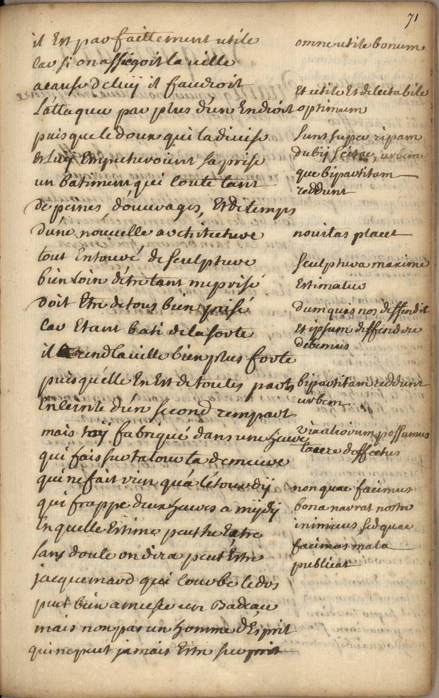
il est parfaittement utile
car si on assiegoit la uille
a cause de luÿ il faudroit
l'attaquer par plus d'un endroit
puisque le doux qui la diuise
et luÿ empecheroient sa prise
un batiment qui coute tant
de peines, douurages et de temps
d'une nouuelle architecture
tout entouré de sculture
bien loin d'etre tant meprisé
car etant bati de la sorte
il rend la uille bien plus forte
puisqu'elle en est de toute parts
enceinte d'un second rempart
mais toÿ fabriqué dans une heure
qui fais sur ta tour ta demeure
qui ne fait rien qu'a l'etourdÿ
qui frappe deux heures a mÿdÿ
en quelle estime peut tu estre
sans doute on dira peut estre
jacquemard qui courbe le dos
peut bien amuse un badeau
mais non pas un homme d'esprit
qui ne peut jamais estre surprit269–270 om. Z
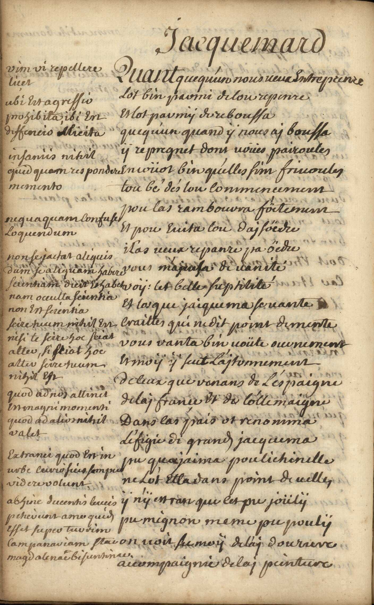
Jacquemard
Quant quequ'un nous ueux entreprenre
lot bin parmi de lou repenre
et lot parmÿ de reboussa
quequ'un quand ÿ nous ai boussa
ÿ repregnet dont uoües pairoutes
encoüot bin qu'elles sint friuoules
tou bé dés lou commencement
pou las rambourra föetement
et pou euita lou d'aisöedre
ilas ueux repanre par öedre
uous m'aicusa de uanité
uoÿ: let belle suptilité
et losque jaiquema se uante
craittes qui ne dit point de mente
uous uanta bin uoüte ournement
et moÿ ÿ scut l'aitornement
de ceux que uenans de l'espaigne
de lai france et de l'ollemaigne
dans cas pais ot renomma
l'efigie de grand jacquema
pu que jaima poulichinelle
ne l'ot etta dans point de uelles
ÿ n'ÿ en ran que les pu joülÿ
pu mignon meme pu poulÿ
ou uoit su moÿ de l'ai dourure
aicompaignie de lai peinture
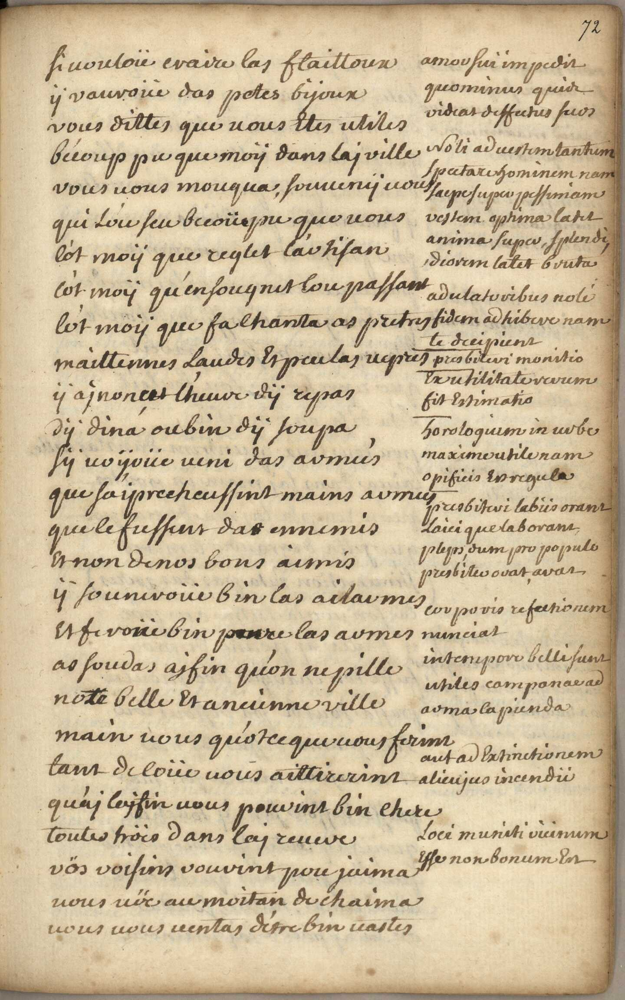
si uouloü craire las flaittoux
ÿ uauroüe das petes bijoux
uous dittes que uous etes utiles
bécoup pu que moÿ dans lai uille
uous uous mouqua, souuenÿ uous
qui l'ou scu becoü pu que uous
c'ot moÿ que reglet l'artisan
c'ot moÿ qu'en sougnet lou passant
c'ot moÿ que fa chanta as pretres
maittennes laudes et peu las uepres
ÿ ainonçet l'heure dÿ repas
dÿ dina ou bin dÿ soupa
sÿ uoÿoüe ueni das armées
que saiprecheussint mains armés
que ce fussent das ennemis
et non de nos bons aimis
ÿ souneroüe bin las ailarmes
et feroüe bin penre las armes
as soudas aifin qu'on ne pille
note belle et ancienne ville
main uous qu'ot ce que uous ferint
tant de coüe uous aittirerint
qu'ai lai fin uous pourint bin chere
toutes tröes dans lai reuere
uös uoisins uourint pore jaima
uous uöe au moitan de chaima
uous uous uentas d'etre bin uastes
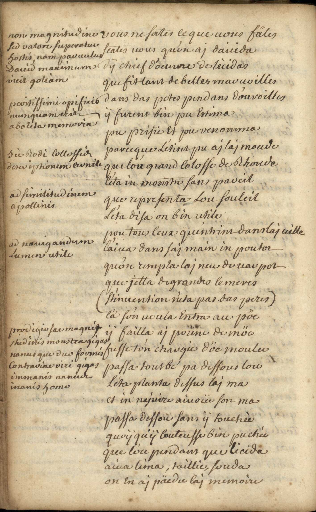
uous ne fates ce que uous fätes
scates uous qu'on ai daicida
dÿ chief d'oeuure de licidas
qui fit tant de belles maruoilles
dans das petes pendans d'ouroilles
ÿ furent bin pu estima
pu prisie et pu renomma
parce que l'etint pu ai lai moude
que l'ou grand colosse de Rhoude
c'eta in monstre sans pareil
que representa lou souleil
l'eta disa on bin utile
pou tous ceux qu'entrint dans lai uille
l'aiua dans sai main in poutot
qu'on rempla lai neu de uarpot
que jetta de grandes lemeres
(st'inuention n'eta pas das peres)
lä s'on uoula entra au pöe
ÿ failla ai poüne de möe
fusse t'on chargie döe moulu
passa tout bé pas dessous lore
l'eta planta dessus lai ma
et in naiuire aiuoüe son ma
passa dessou sans ÿ touchie
quoÿ quÿ couteusse bin pu chir
que löre pendant que licida
aiua lima, taillie, souda,
on en ai päedu lai memoire
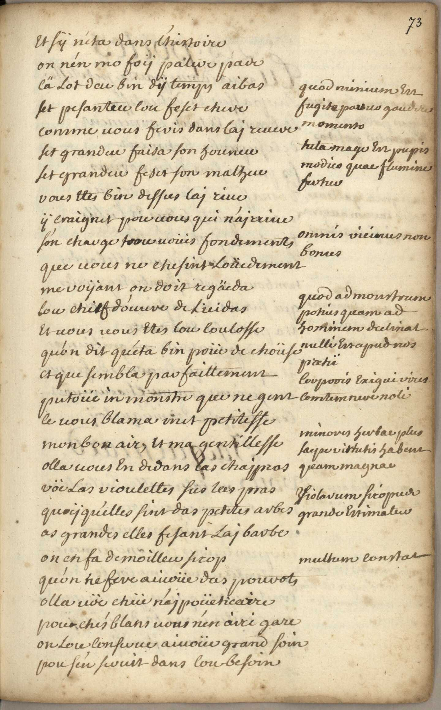
et sÿ n'eta dans l'histoire
on n'en mo foÿ palere pas
cä l'ot deu bin dÿ temps aibas
set pesanteu lou feset chere
comme uous feris dans lai reuere
set grandeu feset son houneu
set grandeu feset son malheu
uous etes bin dessus lai riue
ÿ craignet pore uous qui n'airriue
s'on charge trou uoüs fondements
que uous ne chesint loüedement
me uoÿant on doit regaëda
lou chief d'ouure de Licidas
et uous uous etes lou coulosse
qu'on dit qu'eta bin poüe de choüse
et que sembla parfaittement
putoüe in monstre que ne gent
ce uous blama met petitesse
olla uous en dedans las chaipras
uöe las uioulettes sur las pras
quoÿ qu'elles sint das petite arbes
as grandes elles fesant lai barbe
on en fa de moilleu sirop
qu'on ne fere aiuoüe das pourots
olla oë chüe n'aipoüeticaire
pou chés blans uous n'en airi gare
on lou consuue aiuoüe grand soin
pou s'en seruit dans lou besoin
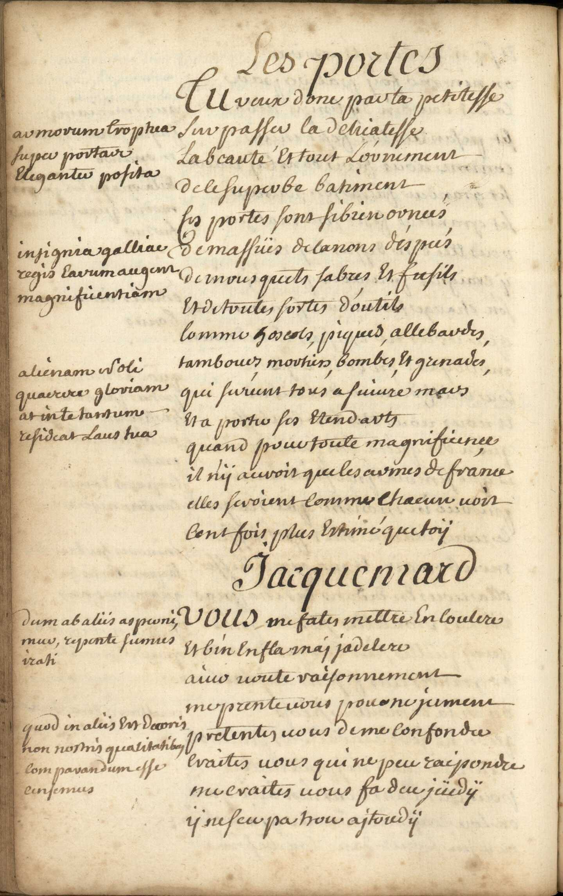
Les portes
Tu ueux donc par ta petitesse
surpasser la delicatesse
la beauté et tout l'ornement
de ce superbe batiment
Ses portes sont si bien ornées
de massües de canons d'espées
de mousquets sabres et fusils
et de toutes sortes d'outils
comme hoscols, piques, allebardes,
tambour, mortiers, bombes et grenade,
qui suruent tous a suiure mars
et a porter ses etendarts
quand pour toute magnificençe
il n'ÿ auroit que les armes de france
elles seroient comme chacun uoit
cent fois plus estimé que toÿ
Jacquemard
Uous me fates mettre en coulere
et bin enfla mai jadelere
aiuo uoute raisonnement
me prente uous pour ne jument
pretentes uous de me confondre
craites uous qui ne peu raipondre
me craites uous fa deu jüedÿ
ÿ ne seu pa trou aitoudÿ
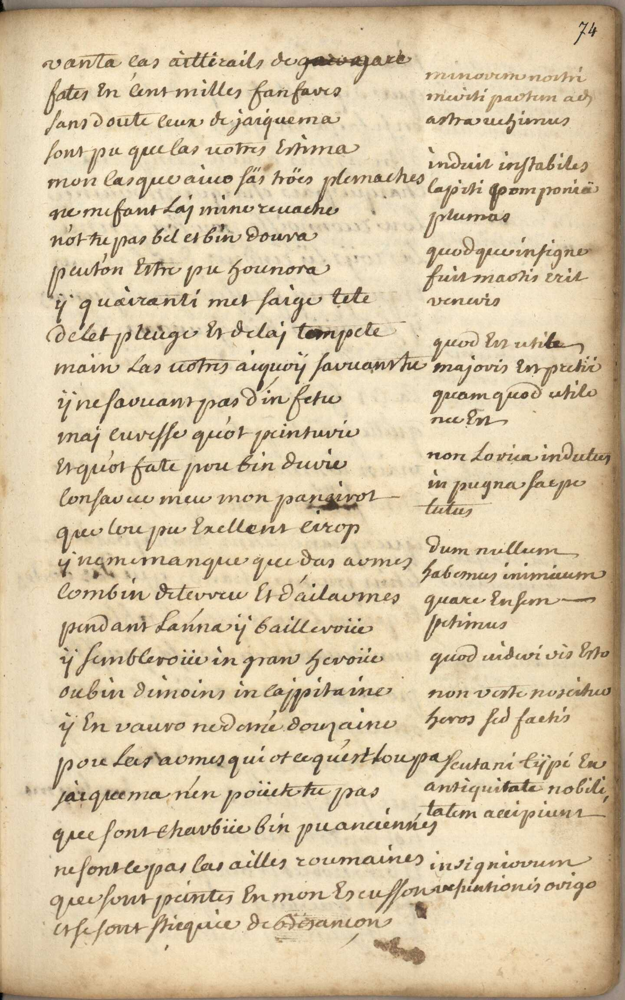
uanta cas aittirails de gare
fates en cent milles fanfares
sans doute ceux de jaiquema
sont pu que las uotres estima
mon casque aiuo säs tröes plemaches
ne me fant lai mine reuache
n'ot tu pas bel et bin doura
peut'on estre pu hounora
ÿ guairanti met saige tete
de let pleuge et delai tempete
main las uotres aiquoÿ saruant tu
ÿ ne faruant pas d'in fetu
mai curesse qu'ot peinturie
et qu'ot fate pou bin durie
confar ue meu mon pancirot
que lou pu exellent cirop
ÿ ne me manque que das armes
combin de terreu et d'ailarmes
pendant l'anna ÿ bailleroüe
ÿ sembleroüe in gran heroüe
ou bin dimoins in caipitaine
ÿ en uauro ne domé douzaine
pou las armes qui ot ce qu'est loupa
jaiquema n'en poüete tu pas
que sont charbüe bin pu anciennes
ne sont ce pas las ailles roumaines
que sont peintes en mon escusson
et se sont stiequie de Besançon
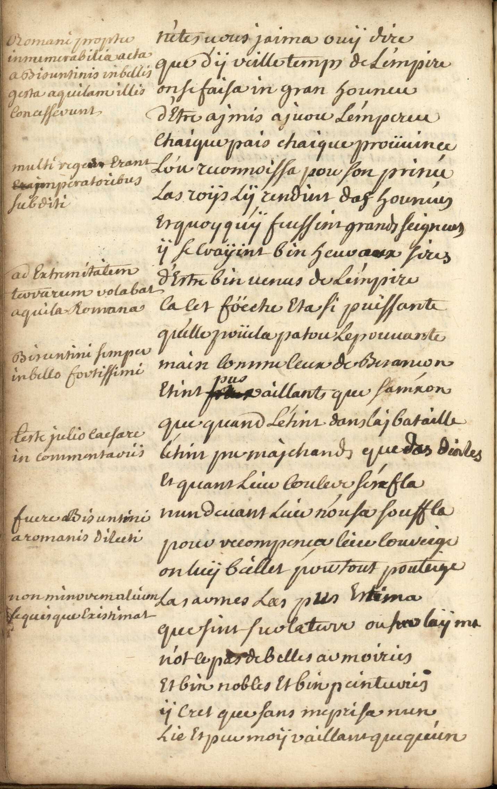
n'etes uous jaima ouÿ dire
que dÿ ieomme temps de l'empire
on sesaifa in gran houneu
d'etre aimis aiuou l'empereu
chaique pais chaique proüuince,
l'ou reconnoissa pou son prince,
las roÿs lÿ rendint das houneus
et quoy qu'ÿ feussint grands seigneurs
ÿ se craÿint bin heuraux sires
d'estre bin uenus de l'empire
ca cet föeche eta si puissante
qu'elle poüela patou lepouuante
main comme ceux de Besançon
etint pus uaillants que samson
que quand l'etint dans lai bataille
l'etin pu maichands que das diales
et quant lieu couleur s'enfla
nun deuant lieu n'ousa souffla
pour recompença lieu couraige
on luÿ baillet pou tout poutaige
Las armes las plus estima
que sint sur la tare ou seras laÿ ma
n'ot ce pas de belles armoiries
et bin nobles et bin peinturies
ÿ cret que sans meprisa nun
lie et pee moÿ uaillant quequ'un
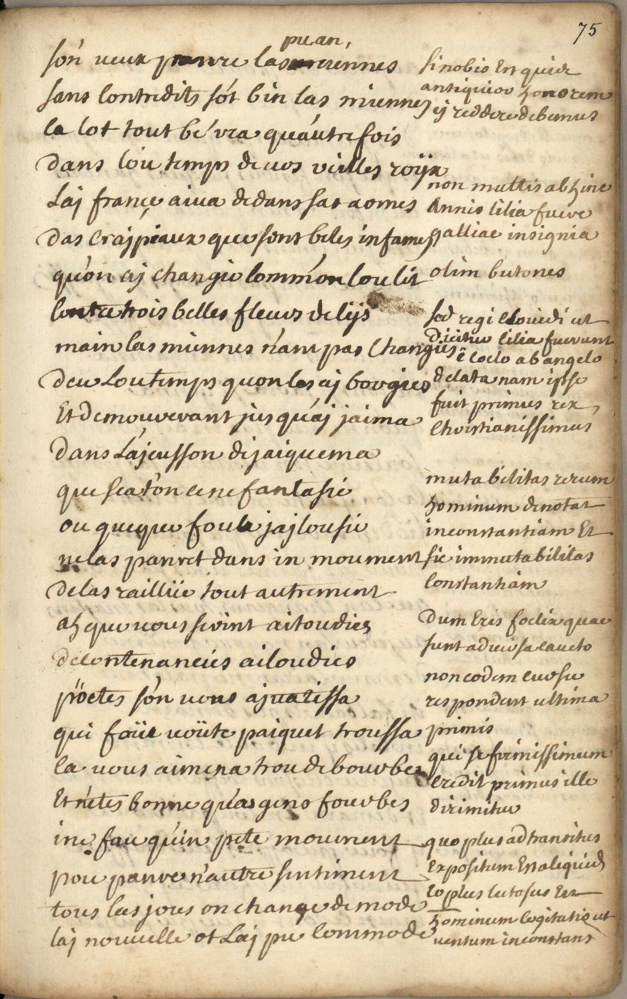
S'on ueux penre las pu anciennes
sans contredits s'ot bin las miennes
ca lot tout bé ura qu'autrefois
dans lou temps de uos ueilles roÿx
lai france aiua dedans sas armes
das craipiaux que sons beles infamy
qu'on ai changie comm'on lou lit
conta trois belles fleurs de lÿs
main las miennes n'ant pas chiangies
deu loutemps quon les ai borgies
et demourerant jusqu'ai jaima
dans l'aicusson de jaiquema
que scat-on ce ne fantasie
ou queque foule jailousie
ne las panret dans in moument
delas raillüe tout autrement
as que uous ferint aitoudies
decontenancies ailoudies
pöetes s'on uous aiuatissa
qui foüe uoüte paiquet troussa
ca uous aimena trou de bourbe
et n'etes bonne qu'as gens fourbes
ine fau qu'in pete moument
pou panre n'autre sentiment
tous les jous on change de mode
lai nouuelle ot lai pu commode
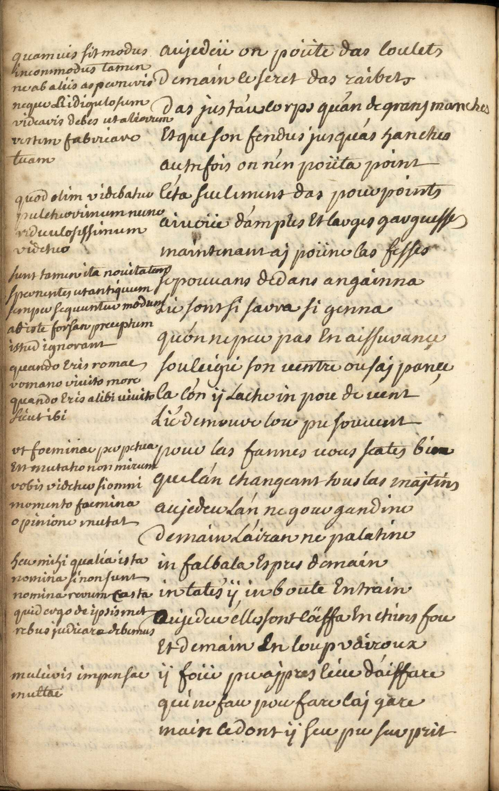
aujedüe on poüte das coulet
demain ce seret das raibets
das just'au corps qu'an de grans manches
et que son fendus jusqu'as hanches
autrefois on n'en poüta point
c'eta seulemens das pourpoints
aiuoüe d'amples et larges garguesses
maintenant ai poüne las fesses
se pouuans dedans angainna
lie sont si sarra si genna
qu'on ne peu pas en aissurançe
soulaigie son uentre ou sai pançe
ca s'on ÿ lache in pou de uent
lie demoure lou pu souuent
pour las fannes uous scates bien
que l'an changeant tous las maitins
aujedeu l'an ne gourgandine
demain l'airan ne palatine
in falbala espres demain
in talés ÿ in boute entrain
aujedeu elles sont cöeffa en chins fou
et demain en loup uairoux504–505 om. Z
ÿ foüe pu aipres lieu d'aiffare
qui ne fau pou fare lai gare
main ce dont ÿ scu pu surprit
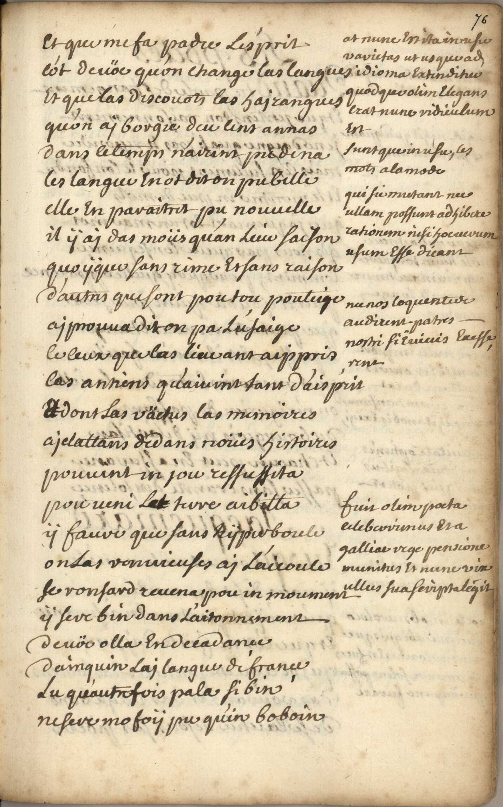
et que me fa padre l'esprit
c'ot de uöe qu'on change las langues
et que las discouots las hairangues
qu'on ai borgie deu cens annas
dans le temps n'airint pu de na
les langue en ot dit on pu belle
elle en paraitret pu nouuelle
il ÿ ai das moüs qu'an lieu saison
quoÿque sans rime et sans raison
d'autres que sont pou tou pouteige
ai prouua dit on pa l'usaige
ce ceux que las lieu ans aippris
las anciens qu'aiuint tant d'aispris
et dont las uäches las memoires
aiclattans dedans noüs histoires
pouuint in jou ressussita
pou ueni let terre aibitta
ÿ faure que sans hÿperboule
on las ronuieuses ai l'aicoule
se ronsard reuena pou un moument
ÿ fere bin dans l'aitonnement
deuöe olla en decadance
dainquin lai langue de france
lu qu'autrefois pala si bin
ne fere mo foÿ pu qu'in boboin.
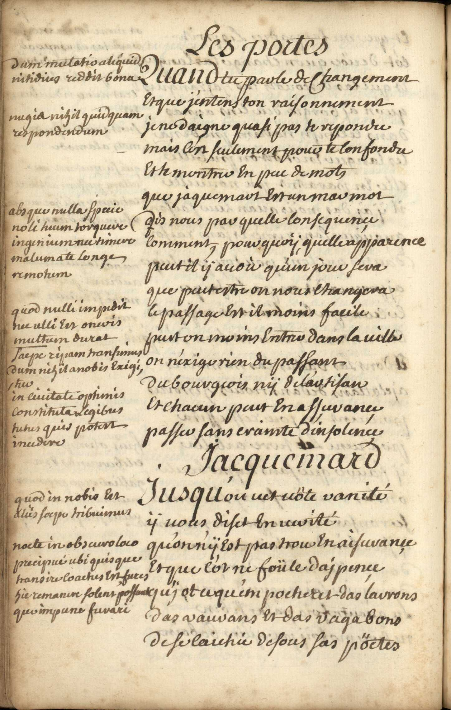
Les portes
Quand tu parle de changement
et que j'entens ton raisonnement
je ne daigne quasi pas te repondre
mais c'est seulement pour te confondre
et te monter en peu de mots
que jaquemart est un marmot
dis nous par quelle consequence
comment, pourquoÿ, quelle apparence
peut il ÿ auouie qu'un jour sera
que peut estre on nous changera
le passage est il moins facile
peut on moins entrer dans la uille
on n'exige rien du passant
du bourgeois nÿ de l'artisan
et chacun peut en assurance
passer sans crainte d'insolence
Jacquemard
Jusqu'ou uet uöte uanité
ÿ uous diset en uerité
qu'on nÿ est pas trou en aisurançe,
et que c'ot ne foüle daipençe
qu'i ot ce que ce qu'empocheret das larrons
das uaurans et das uagabons
de se caichie de sous sas pöetes
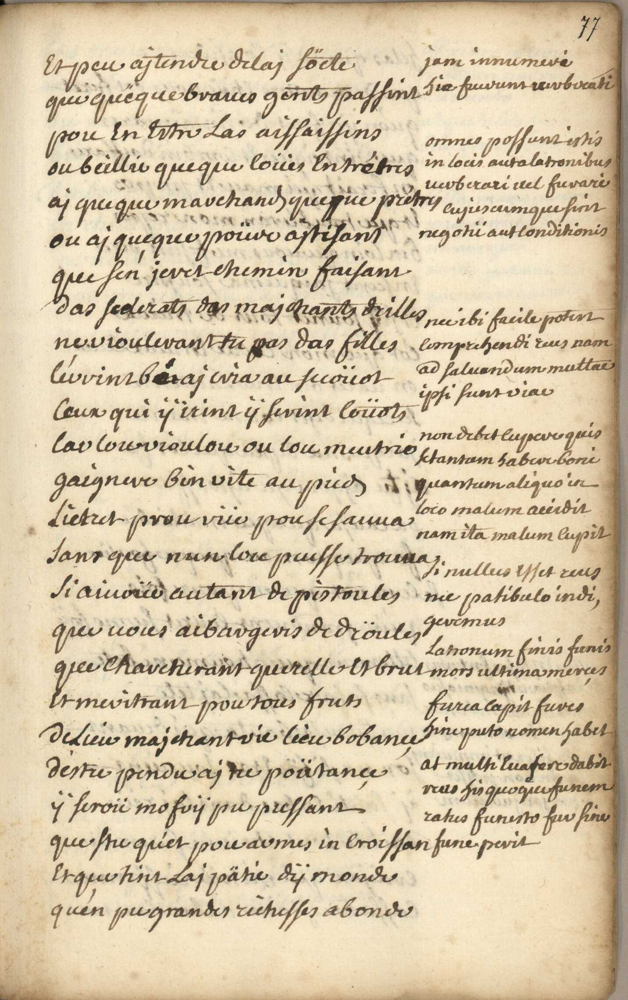
et peu aitendre delai söete
qui queque braues gents passint
pou en estre las aissaissins
ou beillie queque coües en trétres
ai queque marchands queque pretres
ou ai queque poüre artisans
que s'en ieret chemin faisant
das scelerats das maichants drilles
ne uioulerant tu pas das filles
l'errint bin ai cria au secoüot
ceux qui ÿ irint ÿ serint coüots
car lou uioulou ou lou meutrie
gaignere bin uite au pieds569. gaignere bin uite au pieds : mettre en jüe son industrie Z
liet ret prou rüe pour se sauua
Sans que nun lore puisse trouua
si aiuoüe autant de pistoules
que uous aibargeris de dröules
que charcherant querelle et brut
et meritrant pou tous fruts
de lieu maichant uie lieu bobançe
d'estre pendu ai ne poütançe
ÿ seroü mo foÿ pu pussant
que stie qu'et pou armes in croissan
et que tint lai pätie dÿ monde
qu'en pu grandes richesses abonde
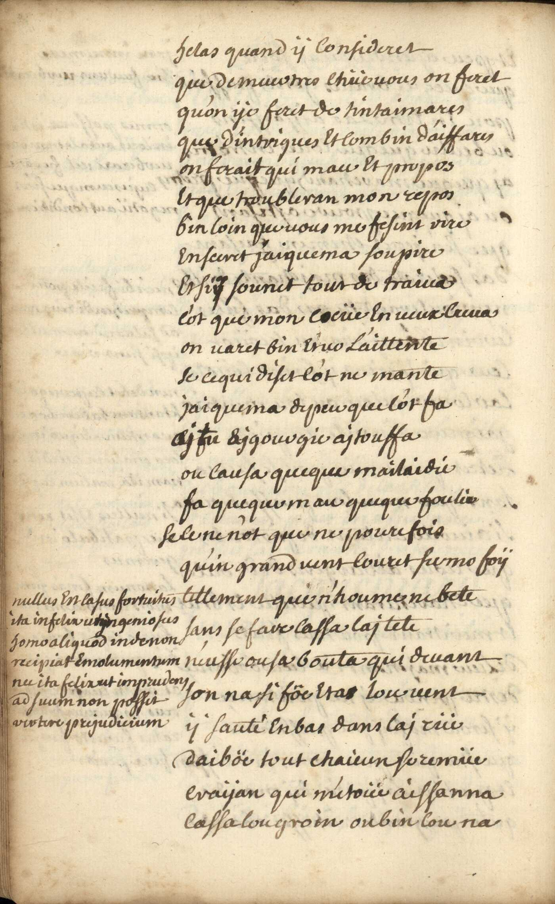
helas quand ÿ consideret
que de meurtres chüe uous on feret
qu'on ÿe feret de tintaimares
que d'intrigues et combin d'aiffares
on ferait qui mau et propos
et que troubleran mon repos
bin loin que uous me fesint rire
en secret jaiquema soupire
et si ÿ sounet tous de traiua
c'ot que mon coeüe en ueux creua
on uaret bin et uo l'aittente
de ce qui diset c'ot ne mante
jaiquema de peu que l'ot fa
ai tu aigourgie aitouffa
ou causa queque mailaidie
fa queque mau queque foulie
se ce ne n'ot que ne poure fois
qu'in grand uent couret sur mo foÿ
tellement que n'houme ne bete
sans se faire cassa lai tete
n'eusse ousa bouta qui deuant
son na si föe et as lou uent
ÿ saute en bas dans lai rüe
daiböe tout chaicun su remüe
craÿan qui n'etoüe aissanna
cassa lou groin ou bin lou na
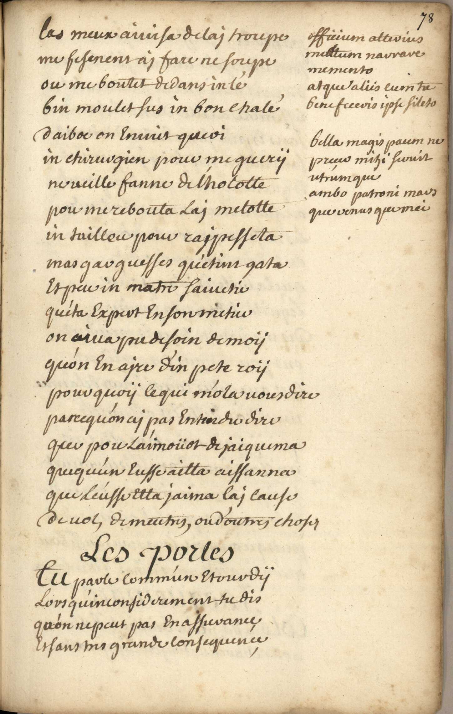
les meux aiuisa de lai troupe
me feserent ai fare ne soupe
ou me boutet dedans in li
bin moulet sus in bon chali
daiboe on enuit queri
in chirugien pour me guerÿ
ne ueille fanne de l'holotte
pou me rebouta lai melotte
in tailleu pour raipesseta
mas garguesses qu'etint gata
et peu in matre saiuetie
qu'eta expert en son metier
on aiua pu de soin de moÿ
qu'on en aire d'in pete roÿ
pourquoÿ ce qui m'ola uous dire
parce qu'on ai pas entendu dire
que pou l'aimoüot de jaiquema
quequ'un eusse aitta aissanna
que l'eusse etta jaima lai cause
de uol, de meutres, ou d'outres choses.
Les portes
Tu parles comm'un etourdÿ
Lors qu'in confiderenement tu dis
qu'on nepeut pas en affurançe
et sans tres grande consequençe.
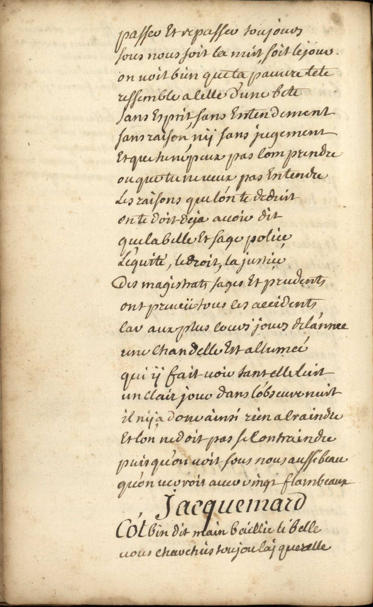
passer et repasser toujours
sous nous soit la nuit, soit le jours
on uoit bien queta pauure tete
ressemble a celle d'une bete
sans esprits, sans entendement
sans raison, nÿ sans jugement
et que tu ne peux pas comprendre
ou que tu ne ueux pas entendre
les raisons que l'ont te deduit
on te doit deja auoir dit
que la belle et sage poliçe
l'équité, le droit, la justiçe
des magistrats sages et prudents
ont preueü tous les accidents,
car aux plus cours jour de l'annee
une chandelle est allumée
qui ÿ fait uoir tant elle luit
un clair jour dans l'obscure nuit
il nÿ a donc ainsi rien à craindre
et l'on ne doit pas se contraindre
puis qu'on uoit sous nous aussi beau
qu'on ueurois auec uingt flambeaux
Jacquemard
C'ot bin dit main biaillie li belle
uous charchies toujou lai querelle
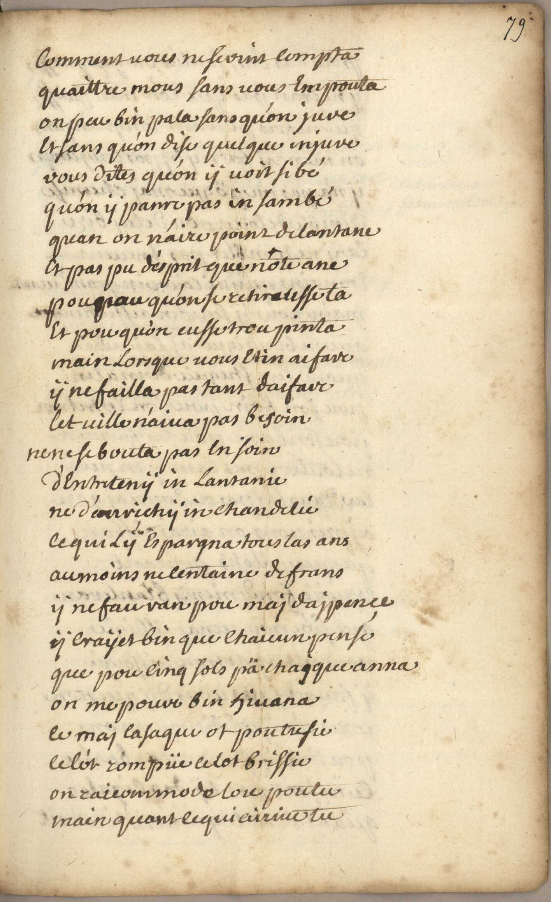
comment uous ne ferint compta
quaittre mous sans uous empouta
on peu bin pala sans qu'on jure
et sans qu'on dise quelque injure
uous dites qu'on ÿ uoit si bé
qu'on ÿ panre pas in sambé
quan on n'aire point de lantane
et pas pu d'esprit que noste ane
pou pau qu'on su retireusse ta
et pou qu'on eusse trou pinta
main lorsque uous etin aifare
ÿ ne failla pas tant daifare
let uille n'aiua pas besoin
ne ne se bouta pas en soins
d'entretenÿ in lantanie
ne d'enrichÿ in chandelie
ce qui l'ÿ espargna tous las ans
au moins ne centaine de frans
ÿ ne fau ran pou mai daipançe
ÿ craÿet bin que chaicun pense
que pou cinq sols pä chaique anna
on me poure bin hiuana
ce mai casaque ot poutusie
ce l'ot rompüe ce lot brissie
on raicommode lou poutu
main quand ce qui airiue tu
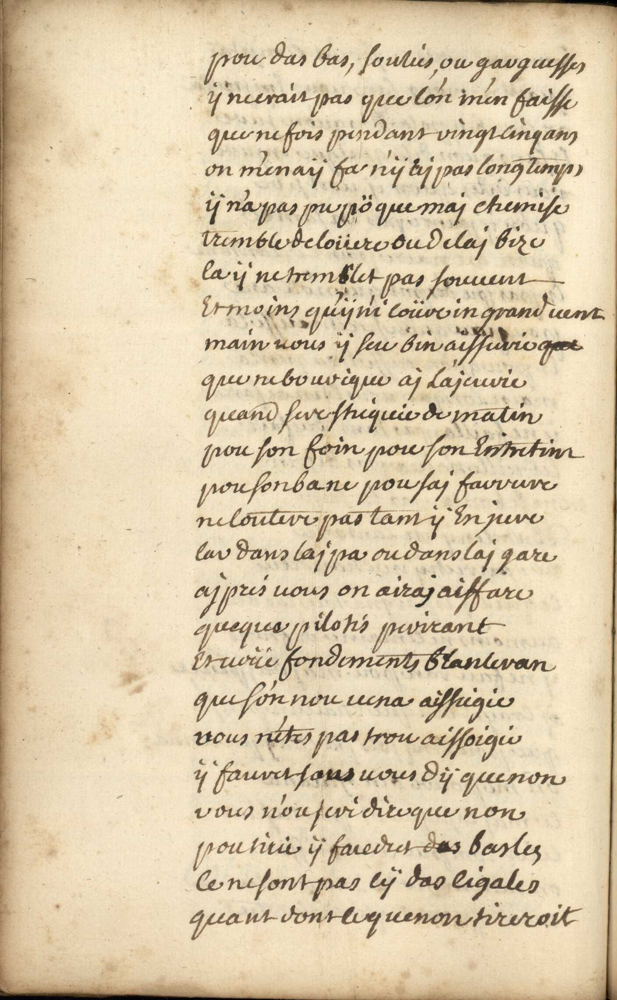
pou das bas, soulies, ou garguesses
ÿ ne crait pas que l'on m'en faisse
que ne fois pendant uingt cinq ans684. uingt cinq ans : quettoëze ans Z.
on m'en aÿ fa nÿ aipas longtemps
ÿ n'a pas pu pö que mai chemise
tremble de loüere ou de lai bize
la ÿ ne tremblet pas souuent
et moins qu'ÿ n'i coüre in grand uent
main uous ÿ scu bin aissurie
que ne bourique ai laicurie
quand sere steiquie de matin
pou son foin pou son entretint
pou son banc pou sai faurure
ne coutere pas tant ÿ enjure
car dans lai pas ou dans lai gare
aipres uous on airai aiffare
queque pilotis perirant
et uoüe fondements blanleran
que s'on nou uena aissiegie
uous n'etes pas trou aissoigie
ÿ fauret sans uous dÿ que non
uous n'ouseri dire que non
pou tirie ÿ faudret das basles
ce ne sont pas cÿ das cigales
quant dont ce quenon tireroit
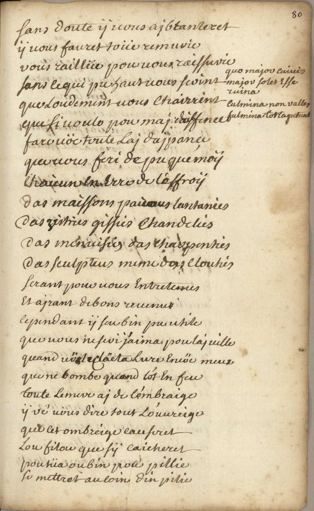
sans doute ÿ uous aiblanleret
ÿ uous fauret toüe remurie
uous raillüe pou uous raissurie
sans ce qui pu haut uous serint
que loudement uous chairrint
que si uoulo pou mai daiffence
fare uöe toute lai daipançe
que uous feri de pu que moÿ
chaicun en erre de l'effroÿ
das maissons paiuous lantanies
das uitries gissies chandelies
das menuisies das charpenties
das sculpteus meme das clouties
serant pou uous entretenus
et airant de bons reuenus
cependant ÿ scu bin pu utile
que uous ne seri j'aima pou lai uille
quand uöet ecläeta lure encöe meux
que ne bombe quand l'ot en feu
toute lemere ai de l'ombraige
ÿ vé uous dire tout l'ouureige
que let ombreige causeret
lou filou que sÿ caicheret
pou tüa ou bin pou pillie
se mettret au coin d'in pilie
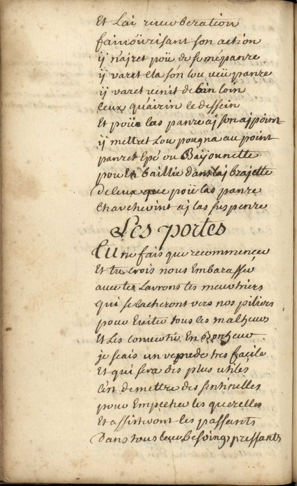
et lai reuerberation
faiuoürisant son action
ÿ n'airet poü de se mépanre
ÿ uaret cla s'on lou ueü panre
ÿ varet uenit de bin loin
ceux qu'airin le dessein
et poür las panre ai son aipoint
ÿ mettret lou pougna au point
panret epé ou baÿounette
pou en baillie dans lai braiette
de ceux que poü las panre
charcheuint ai las suspenre742–743 om. Z
Les portes
Tu ne fais que recommençer
et tu crois nous embarasser
avec tes larrons tes meurtriers
qui se cacheront vers nos piliers
pour euiter tous ces malheurs
et les conuertir en bonheur
je scais un remede tres façile
et qui sera des plus utiles750–751 om. Z
c'est de mettre des sentinelles
pour empecher les querelles
et assisteront les passants
dans tous leur besoings pressants
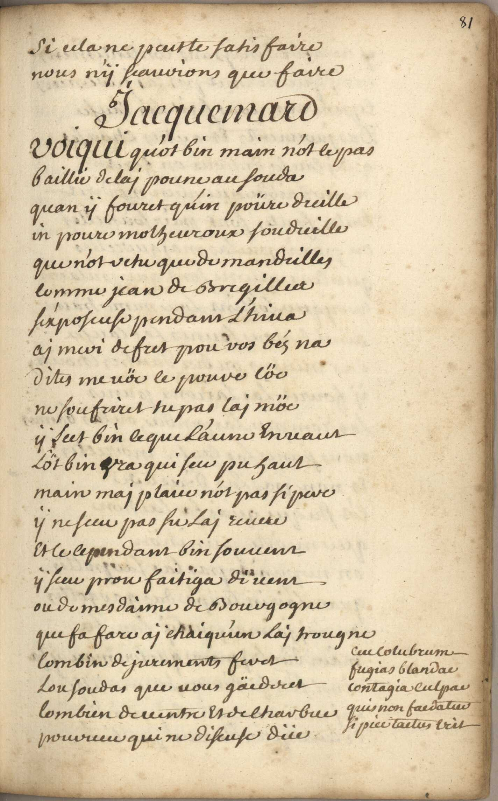
si cela ne peut te satisfaire
nous n'ÿ scaurions que faire756–757 om. Z
Jacquemard
Voiqui qu'ot bin main n'ot ce pas
baillie de lai poune au souda
quan ÿ fouret qu'in poüre dreille
in poure molheuroux soudrille
que n'ot uetu que de mandrilles
comme jean de Bregille762–763 om. Z
s'exposeuse pendant l'hiua
ai meri de fut pou uos bés na
dites me uöe ce pouue cöe
ne soufriret tu pas lai möe
ÿ scet bin ce que l'aune en uaut
l'ot bin ura qui seu pu haut
main mai plaice n'ot pas si pere
ÿ ne sceu pas su lai reuere
et ce cependant bin souuent
ÿ sceu prou faitiga di uent
ou de mesdaime de Bourgogne
que fa fare ai chaiqu'un lai trougne
combin de jurements feret776 post feret add. Z : lou soudas.
lou soudas que uous gäederet
combien de uentre et de charbue
pourceu qui ne discuse düe
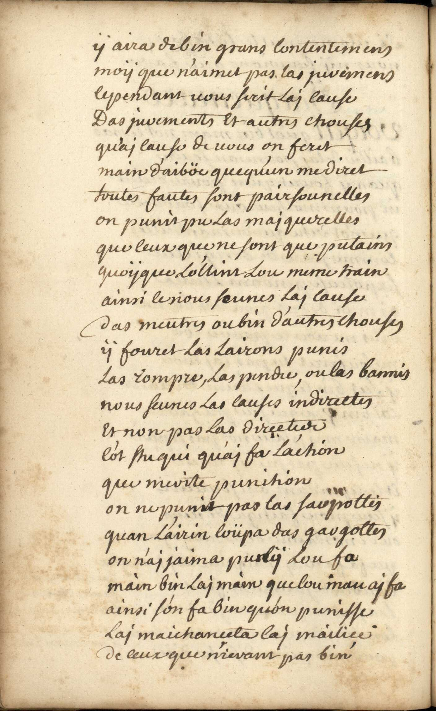
ÿ aira de bin grans contentemens
moÿ que n'aimet pas la juremens
cependant uous serit lai cause
Das jurements et autres chouses
qu'ai cause de uous on feret
main d'aiböe quequ'un me diret
toutes fautes sont pairsounelles
on punit pu las maiquerelles
que ceux que ne sont que putains
quoÿque l'ollint lou meme train
ainsi ce nous scunes lai cause
das meutres ou bin d'autres chouses
ÿ fouret las lairons punis
las rompre, las pendre, ou las bannis
nous scunes las causes indirectes
et non pas las directes
c'ot stu qui qu'ai fa l'action
que merite punition
on ne punit pas las sarpottes
quan l'airin coüpa das gargottes
on n'ai j'aima punÿ lou fa
main bin lai main que lou mau ai fa
ainsi s'on fa bin qu'on punisse
lai maichanceta lai mailiçe
de ceux que n'erant pas bin
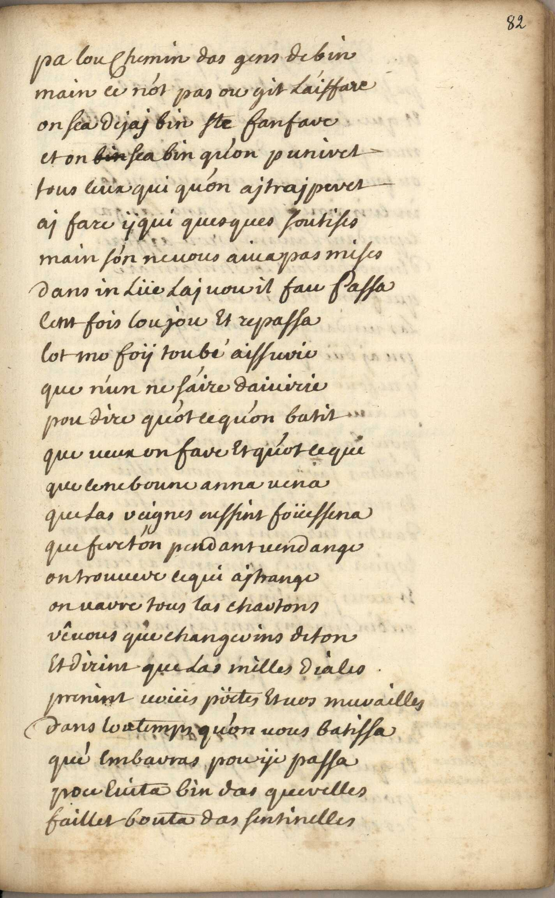
pa lou chemin das gens de bien
main ce n'ot pas ou git l'aiffare
on sca dejai bin ste fanfare
et on bin sca bin qu'on puniret
tous ceux qui qu'on aitraiperet
ai fare ÿ qui quesques soutises
main s'on ne uous aiua pas mises
dans un lüe lai uou il fau passa
cent fois lou jou et repassa
cot mo foÿ tou bé aissurie
que n'un ne faire d'aiuirie
pou dire qu'ot ce qu'on batit
que ueux on fare et qu'ot ce quipost 817 add. Z : vous seri bounes pou la fourbes / toujours toutes templies de bourbes
que ce ne boune anna uena
que las ueignes eussint foüessena
que feret'on pendant uendange
on trouuere ce qui aitrange
on uaure tous las chartons
uê uous que changerins de ton
et dirint que las milles diales
prenint uou pöetes et uos murailles
dans lou temps qu'on uous batissa
qué embarras pou ÿe passa
pou euita bin das querelles
faillet bouta das sentinelles
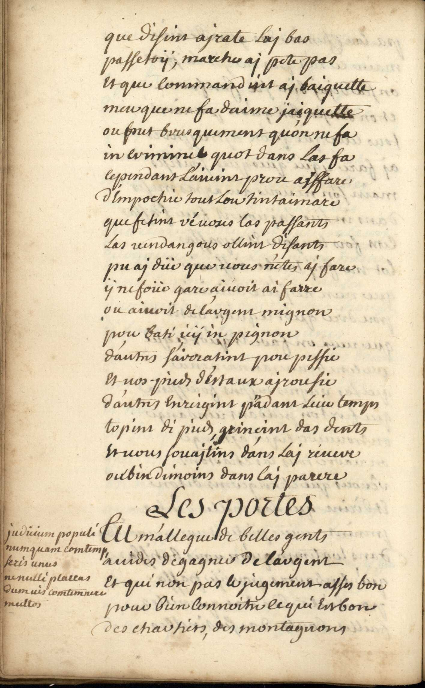
que disint airate lai bas
passe toÿ, marcher ai pete pas
et que commandint uit ai baiguette
meu que ne fa daime jaiquette
ou put brusquement qu'on ne fa
in criminel quot dans las fa
cependant l'aiuint prou aiffare
d'impochie tout lou tintaimare
que fetint vé uous las passants
las vendangous ollint disants
pu ai düe que uous n'etes ai fare
ÿ ne foüe gare aiuoit ai farre
ou aiuoit de l'argent mignon
pou bati icÿ in pignon
d'autres sairratint pou pissie
et uos pied d'estaux airousie
d'autres enreigint pädant lieu temps
topint di pied, grinçint das dents
et uous souaitins dans lai reuere
ou bin di moins dans lai parere
Les portes
Tu m'allegue de belles gents
auides de gagner de l'argent
et qui non pas le jugement asses bon
pour bin connoitre ce qui est bon
des chartiers, des montagnons
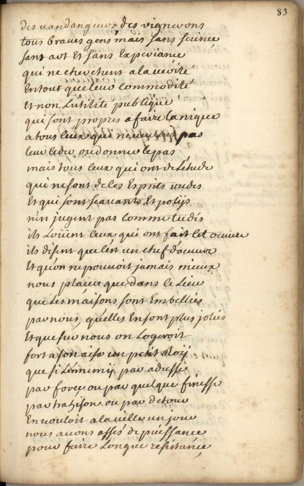
des uendangeurs, des uignerons
tous braues gens mais sans science
sans art et sans experiance
qui ne cherchent a la vérité
en tout que leur commodité
et non l'utilité publique
qui sont propres a faire la nique
a tous ceux qui ne ueulout pas
leur ceder ou donner le pas
mais tous ceux qui ont de l'etude
qui ne sont de ces esprits rudes
et qui sont scuants et polÿs
n'en jugent pas comme tu dis
ils loüent ceux qui ont fait cet oeuure
ils disent que c'est un chef d'oeuure
et qu'on ne pouuoit jamais mieux
nous plaçer que dans ce lieu
que les maisons sont embellies
par nous, qu'elles en sont plus jolies
et que sur nous on logeroit
fort à son aise un petit Roÿ
que si l'ennemÿ par adresse
par forçe ou par quelque finesse
par trahison ou par detour
en uouloit a la uille un jour
nous auons assés de puissançe
pour faire longue resistançe
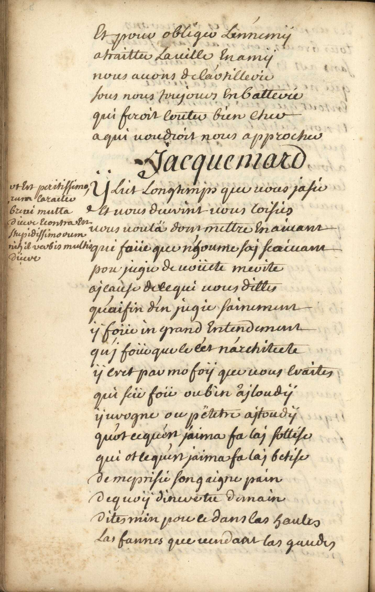
et pour obliger l'ennemÿ
a traitter la uille en amÿ
nous auons de l'artillerie
sous nous toujours en batterie
qui feroit couter bien cher
a qui uoudroit nous approcher
Jacquemard
ÿ liet longtemps que uous jasie
et uous deurint uous coisies
uous uoula dont mettre en aiuant
qui faüe que n'houme soi scaiuant
pou jugie de uoüete merite
ai cause de ce qui uous dittes
qu'aifin d'en jugie sainement
ÿ foüe in grand entendement
qui foüe que ce c'et n'architecte
ÿ cret par mo foÿ que uous craites
qui scü foü ou bin ailoudÿ
ÿurogne ou petetre aithoudÿ
qu'ot ce qu'est jaima fa lai sottise
qui ot ce qu'est jaima fa lai betises
de meprisie son gaigne pain
de quoÿ dinere tu demain
dites m'in pou ce dans las haules
las fannes que uendant las gaudes
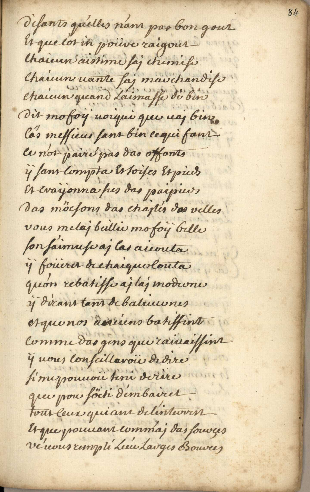
disants qu'elles n'ant pas bon gout
et que c'ot in poüre raigout
chaicun aistime sai chemise
chaicun uante sai marchandise
chaicun quand l'aimasse di bin
dit mo foÿ uoiqui que uai bin
car messieus sant bin ce qui fant
ce n'ot pairé pas das offants
ÿ sant compta et toises et pieds
et craÿonna sus das paipiers
das möesons das chaités das uelles
uous melai beillie mo foÿ belle
son s'aimuse ai las aicouta
ÿ foüeret de chaique couta
qu'on rebatisse ai lai moderne
ÿ dirant tant de baliuernes
que nos anciens batissints
comme das gens que raiuaissint
ÿ uous conseilleroü de dire
si me pouuoü teni de rire
que pou söeti d'embairet
tous ceux qui ant de l'interest
et que pouuant comm'ai das sourçes
ué uous rempi lieu larges bources.
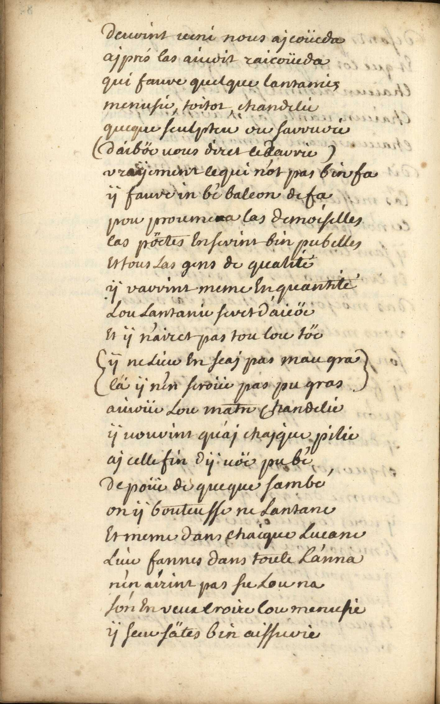
deuuint ueni nous aicoüeda
aiprés las aiuoit raicoüeda
qui faure quelque lantaniers
menusie, toitot, chandelie
queque scultpteu ou sarrurie
uraÿment ce qui n'ot pas bin fa
ÿ faure in bé balcon de fa
pou proumena las demoiselles
las pöetes en serint bin pu belles
et tous las gens de qualité
ÿ uaurint meme en quantité
Lou lantanie seret d'aicöe
et ÿ n'airet pas tou lou töe
(ÿ ne lieu en scai pas mau gra)
(cä ÿ n'en feroüe pas pu gras)
aiuoüe lore matre chandelie
ÿ uourint qu'ai chaique pilie
ai celle fin dÿ uöe pu bé
de poüe de queque sambé
on ÿ bouteusse ne lantane
et meme dans chaique lucane
lieu fannes dans toute l'anna
n'en airint pas su lou na
s'on en ueux croire lou menusie
ÿ sceu fätes bin aissurie
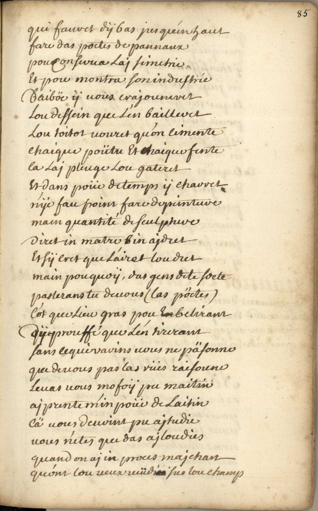
qui fauret dÿ bas jusqu'en haut
fare das poetes de pannaux
pou conserua lai simetrie
et pou montra son industrie
daiböe ÿ uous crajouneret
lou deffein que l'en bailleret
Lou toitot uouret qu'on cimente
chaique poütu et chaique fente
ca lai pleuge lou gateret
et dans poüe de temps ÿ charret
nÿe fau point fare de peinture
main quantité de sculpture
diret in matre bin aidret
et sÿ cret que l'airet lou dret
main pourquoÿ, das gens dete soete
paslerans tu de uous (las pöetes)
C'ot que lieu gras pou enbelirant
dÿ prouffé que l'en tirerant
sans ce qui uarins uous ne päsonne
que de uous pas la rües raisoune
leuas uous mo foÿ pu maitin
aiprente m'in poüe de laitin
cä uous deuuint pu aitudie
uous n'etes que das ailoudies
quand on ai in proces maichant
qu'ont lou ueux ueüd sus lou champ
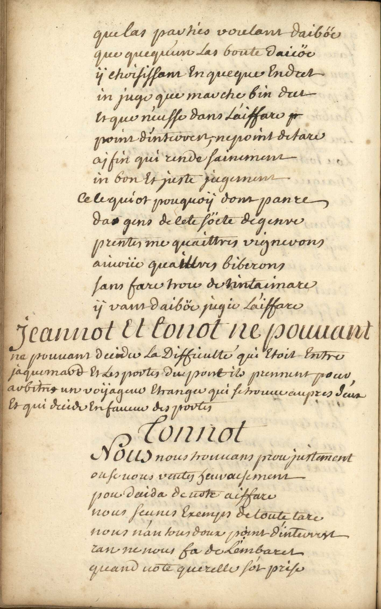
que las parties uoulant daiböe
que quequ'un las boute daicöe
ÿ choisissant en quelque endret
in juge que marche bin dret
et que n'eusse dans l'aiffare
point d'interrest, ne point de tare
aifin qui rendre sainement
in bon et juste jugement
ce ce qui ot pouquoÿ dont panre
das gens de cete söete de genre
prentes me quaittres uignerons
aiuoüe quaittres biberons
sans fare trou de tintaimare
ÿ uant daiböe pigie l'aiffare
Jeannot et Tonot ne pouuant
ne pouuant decida la Difficulté qui etoit entre
jaquemard et les portes du pont ils prennent pour
arbitres un uoÿageur etranger qui se trouue aupres d'eux
et qui decide en faueur des portes
Tonnot
Nous nous trouuans prou justement
ou se uous ueutes heurousement
pou decida de uote aiffare
nous scunes exemps de toute tare
nous n'an tous doux point d'interrest
ran ne nous fa de l'embaret
quand uote querelle s'ot prise
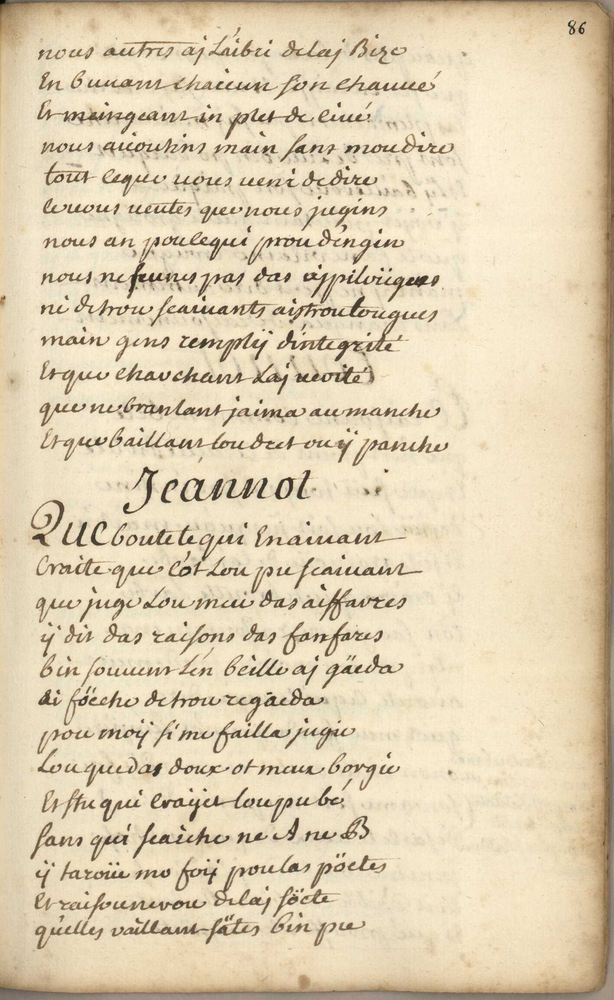
nous autres ai l'aibri delai bize
en buuant chaicun son chauué
et maingeant in plet de ciué
nous aicoutins main sans mou dire
tout ce que uous ueni de dire
ce uous ueutes que nous jugins
nous en pou ce qui prou d'engin
nous ne scunes pas das aipiloügues
ni de trou scaiuants aistroulougues
main gens remplÿ d'integrité
et que charchant lai uerité
que ne branlant jaima au manche
et que baillant lou dret ou ÿ panche
Jeannot
Que boute te qui en aiuant
craite que c'ot lou pu scaiuant
que juge lou meu das aiffarres
ÿ dit das raisons das fanfares
bin souuent l'en beille ai gäeda
di föeche de trou regäeda
pou moÿ si me failla jugie
lou que das doux et maux borgie
et stu qui craÿet lou pu bé
sans qui scaiche ne A ne B
ÿ taroüe mo foÿ pou las pöetes
et raisounerou de lai söete1027 om. Z
qu'elles uaillant sätes bin pu
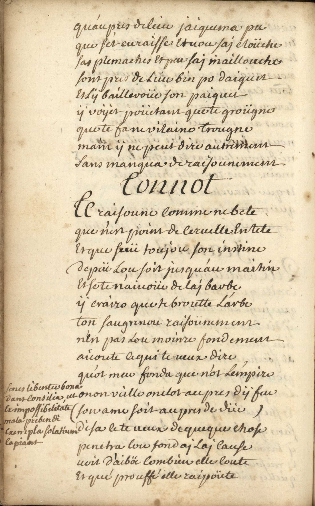
qu'aupres de lieu jaiqquema pu
que set curaisse et uou sai cloüche
sas plemaches et peu sai maillouche
sont pris de lieu bin po daiquet
et lÿ bailleroüe son paiquet
ÿ uoÿet poüetant que te groügne
que te fa ne uilaine trougne
main ÿ ne peut dire autrement
sans manqua de raisounement
Tonnot
Tu raisoune comme ne bete
que n'est point de ceruelle en tete
et que sceü toujou son instinc
depeü lou soit jusqu'au maitin
et se te n'aiuoüe de l'ai barbe
ÿ crairo que te broutte l'arbe
ton saugrenou raisoünement
n'est pas lou moinre fondement
aicoute ce qui te ueux dire
qu'ot meu fonda que n'ot l'empire
mon ueille onclot aupres dÿ feu
(son ame soit aupres de düe)
disa ce te ueux de queque chose
penetra lou fond ai lai cause
uoit d'aiböe combien elle coute
et que prouffé elle raipoüte
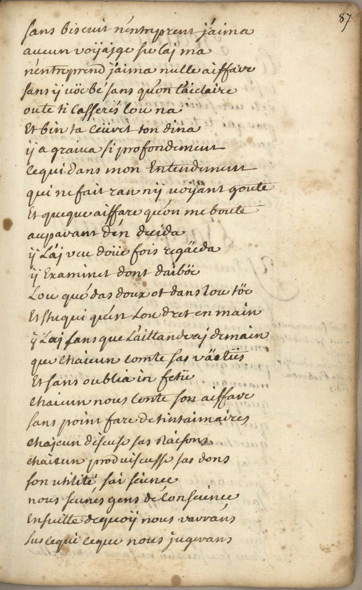
sans biscuit n'entreprent j'aima
aucun uoÿaige su lai ma
n'entreprend j'aima nulle aiffaire
sans ÿ uöe bé sans qu'on t'aiclaire
ou te ti casserés lou na
et bin ta ceüret ton dina
ÿ a graiua si profondement
ce qui dans mon entendement
qui ne fait ran nÿ uoÿant goute
et queque aiffare qu'on me boute
auparant d'en decida
ÿ l'ai ueu doüe fois regäeda
ÿ examinet dont daiböe
Lou qué das doux ot dans lou töe
Et ste qui qu'in lou dret en main
ÿ lai sans que l'aittande ai demain
que chaicun comte sas uäetüs
et sans oublia in fetü
chaicun nous conte son aiffare
sans point fare de tintaimaires
chaicun diseuse sas raisons
chaicun produiseusse sas dons
son utilité, sai sciençe
nous scunes gens de consciençe
ensuitte de quoÿ nous uarrans
sus ce qui ce que nous jugerans
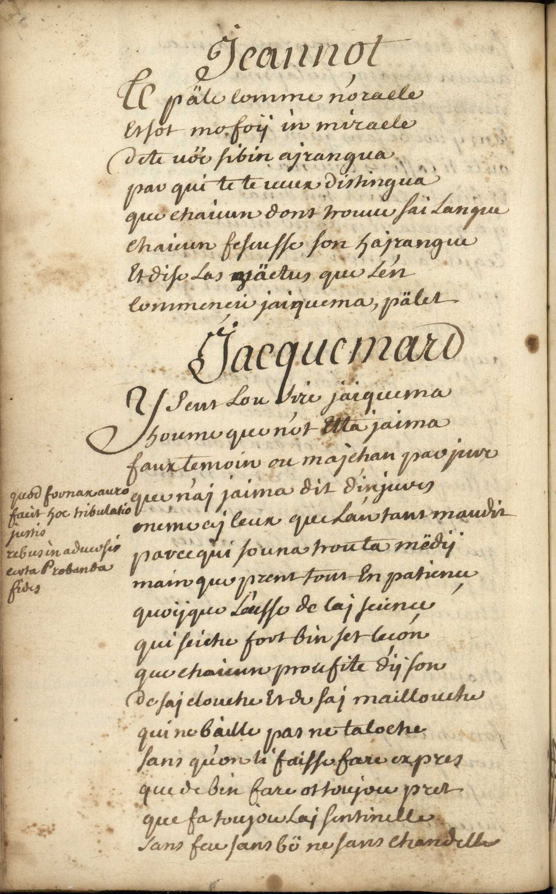
Jeannot
Te päle comme n'oracle
et sot mo foÿ in miracle
dete vöe si bin airangua
par qui te te ueux distingua
qui chaicun dont trouue sai langue
chaicun feseresse son hairangue
et dise las uäetus qui l'en
commeneri jaiquema, pälet
Jacquemard
Y seut lou sire jaiquema
houme que n'ot etta jaima
faux temoin ou majchan parjure
que n'ai j'aima dit d'injures
meme ai ceux que l'an tant maudit
parce qui souna trou ta mëdÿ
main que prent tout en patiençe
quoÿque l'usse de lai sciençe
qui seiche fort bin set leçon
que chaicun proufite dÿ son
de sai clouche et de sai maillouche
qui ne baille pas ne taloche
sans qu'on li faisse fare expres
que de bin fare ot toujou pret
que fa toujour lai sentinelle
sans feu sans bé ne sans chandelle

Dessin à la plume du vieux clocher de l'église de Sainte-Madeleine, avec la fontaine du Pilori au pied, et au-dessus Jacquemard, assis sur une cloche et tenant des deux mains le marteau avec lequel il frappe les heures.
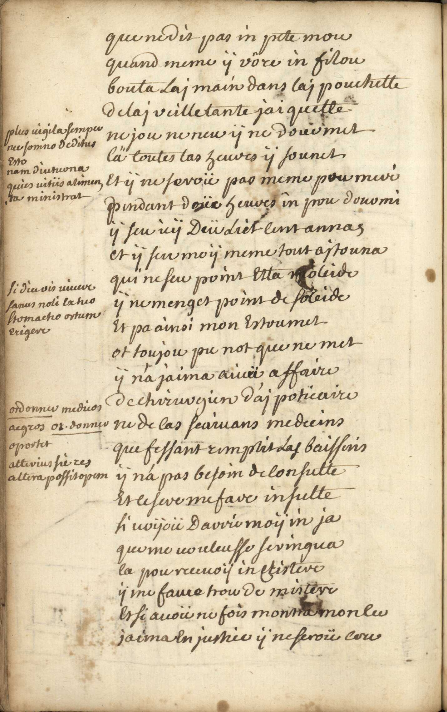
que ne dit pas in pete mou
quand meme ÿ uöre in filou
bouta lai main dans lai pouchette
delai ueille tante jaiquette
ne jou ne neu ÿ ne dourmet
cä toutes las heures ÿ sounet
et ÿ ne seroü pas meme pou meri
pendant doüx heures in pou dourmi
ÿ sci icÿ deü liet cent annas
et ÿ scu moÿ meme tout aitouna
qui ne scu point etta moleide
ÿ ne menget point de soleide
et pas ainsi mon estoumet
ot toujou pu not que ne met
ÿ n'a jaima aiuü affaire
de chirurgien d'aipoticaire
ne de cas scaiuans medecins
que fessant remplit lai baissins
ÿ n'a pas besoin de consulte
et ce fere me faire insulte
si uoÿoü d'arrie moÿ in ja
que me uouleusse seringua
ca pou receuoÿ in clistere
ÿ me faure trou de mistere
et si auoü ne fois montra mon cu
jaima en justice ÿ ne seroü cru
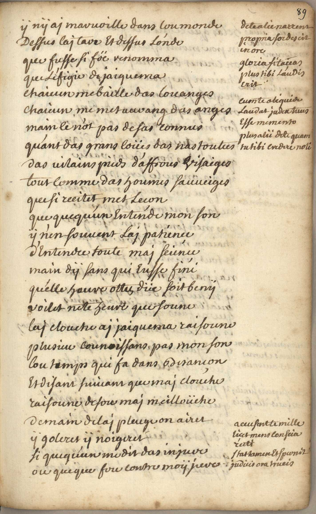
ÿ nÿ ai maruoille dans lou monde
dessus lai tare et dessus l'onde
que fusse si föe renomma
que l'efigie de jaiquema
chaicun me baille das louanges
chaicun me met au rang das anges
main ce n'ot pas de sas connus
qu'ant das grand coües das nas toutus
das uilains pieds d'affrous uisaiges
tout comme das houmes sauueiges
que si recitet met leçon
que quequ'un entende mon son
ÿ n'en souuent lai patience
d'entendre toute mai sciençe
main dÿ sans qui eusse fini
qu'elle heure ottu düe soit beny
uoilet nete heure que soune
lai clouche ai jaiquema raison
plusieurs connoissans pas mon son
lou temps qui fa dans Besançon
et disant suiuant que mai clouche
raisoune desou mai meilloüche
demain de lai pleuge on airet
ÿ goleret, ÿ noigeret
si quequ'un me dit das injure
ou queque fou contre moÿ jures
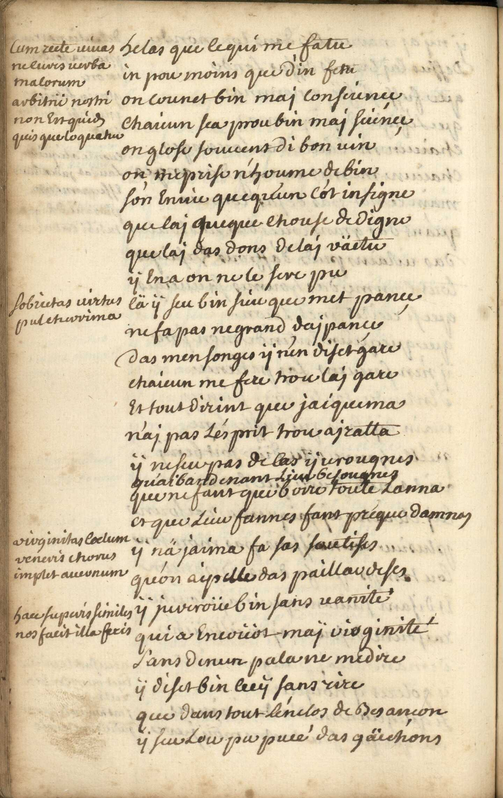
helas que ce qui me fa tu
in pou moins que d'in fetu
on counet bin mai consciençe
chaicun sca prou bin mai sciençe
on glose souuent di bon uin
on meprise n'houme de bin
s'on enuie quequ'un c'ot in signe
que cai queue chouse de digne
que cai das dons de lai väetu
ÿ en a on ne le fere pu
cä ÿ scu bin fiere que met pançe
ne fa pas ne grand daipançe
das mensonges ÿ n'en diset gare
chaicun me fere trou lai gare
et tout dirint que jaiquema
n'ai pas l'esprit trou airatta
ÿ ne scu pas de cas ÿurougnes
qu'aibandenant lieu besougnes
que ne fant que boire toute l'anna
et que lieu fannes fant preque damnas
ÿ nä jaima fa sas soutises
qu'on aipelle das paillardeses
ÿ jureroüe bin sans uanité
qui a encoüot mai uirginité
sans de nun pala ne medire
ÿ diset bin cecÿ sans rire
que dans tout l'enclos de Besançon
ÿ scu lou pu pucé das gäechons
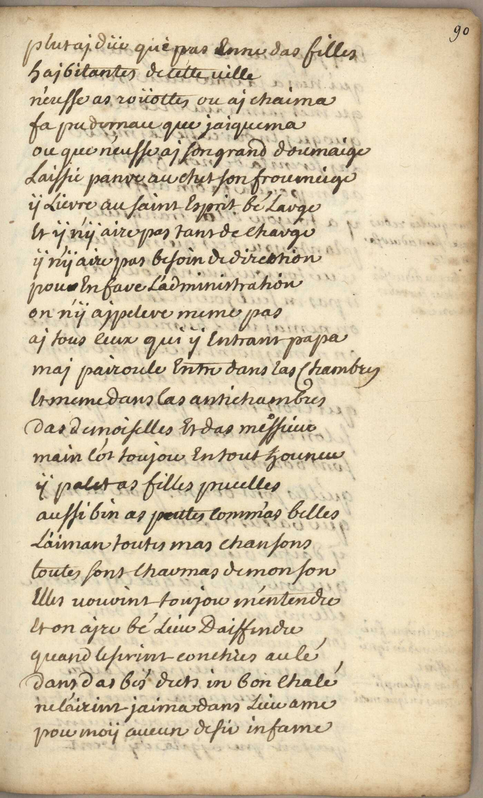
plut ai düe que pas enne das filles
haibitantes de cette uille
n'eusse as roüottes ou ai chaima
fa pu de mau que jaiquema
ou que n'eusse ai son grand doumaige
laissie panre au chet son froumeige
ÿ lirre au saint esprit bé large
et ÿ n'ÿ aire pas tant de charge
ÿ n'ÿ aire pas besoin de direction
pou en fare l'administration1192–1193 om. Z
on n'ÿ aipelere meme pas
ai tous ceux qui ÿ entrant papa
mai pairoule entre dans las chambres
et meme dans las antichambres
das demoiselles et das messieur
main c'ot toujou en tout houneu
ÿ palet as filles pucelles
aussi bin as peutes comm'as belles
l'aiman toutes mas chansons
toutes sont charmas de mon son
elles uourint toujou m'entendre
et on aire bé lieu daiffendre
quand le serint conchies au lé
dans das bés drets in bon chalé
ne l'airint jaima dans lieu ame
pou moÿ aucun desir infame
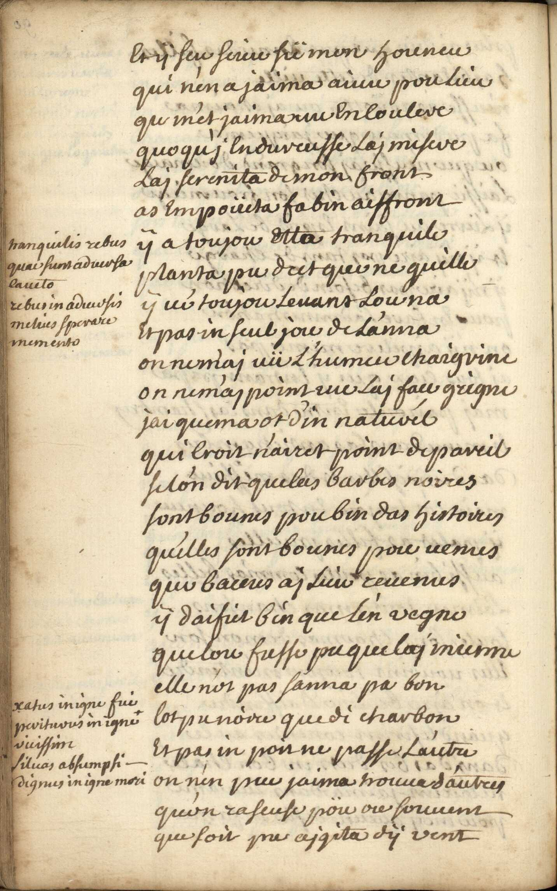
Et ÿ scu seriu sü mon houneu
qui n'en a jaima aiue pou lieu
qu m'et jaima uue en coulere
quoqu'i endureusse lai misere
lai serenita de mon front
as empoüeta fa bin aiffront
ÿ a toujou etta tranquile
planta pu dret que ne guille
ÿ ué toujou leuant lou na
et pas in seul jou de l'anna
on ne m'ai uü l'humeu chaigrine
on ne m'ai point uu l'ai face grigne
jaiquema ot d'in naturel
qui croit n'airet point de pareils
se l'on dit que las barbes noires
sont bounes pou bin das histoires
qu'elles sont bounes pou uenus
que baccus ai lieu reuenus
ÿ daifiet bin que l'en uegne
que lou fusse pu que lai mieme
elle n'ot pas sanna pa bon
lot pu noire que di charbon
et pas in pou ne passe l'autre
on n'en peu jaima trouua d'autres
qu'on raseuse poü ou souuent
que soit pu aigita dÿ vent
Et que set moin dans lou daisöedre
ÿ n'en scet point de meu en öedre
meme stiquie di grand seigneur
das grands barbes l'empereu
se las chouses que sont moubiles
sont estima las pu subtiles
pouquoÿ ne m'estima uous donc pas
pouquoÿ ne me baillie uou lou pa
ÿ remuet dejaÿ bin las brets
mas pougnets, mas doigts sont aidrets
chaicun de regäeda s'empresse
ce que remüe ue met guargaisse
ce mouuement tant seulement
uou meu qu'in vaste batiement
aicouta uöe ste belle enigme
et peu uous uöeris qué estime
on fä de stue que fa mouuoie
jaiquema et son pouuoir
Enigme de l'horeloge
Je n'aÿ bouche n'ÿ langue et je parle a toute heure
je suis fille du temps et j'engendre le temps
je uais, je uiens toujours, et toujours je demeure
je n'aÿ jambes nÿ pieds et je marche des dents
je n'aÿ point de repos sinon quand je trauaille
je ne trauaille point sinon en mon repos
du temps qui mange tout tout les morçeaux je taille
je n'aÿ que du babil et je parle a propos
sans entendre le bal, je marche a la cadançe
je ne scais ce que je dis et si l'on m'entens bien
je marche sagement auec toute constançe
je suis de grands depens et je ne mange rien
je fais diner autruÿ et ne bois nÿ ne mange
müette sans raison et parle avec raison
je ne connois point dieu et chante ses louanges
je n'appris jamais rien et scais bien ma leçon
j'aÿ si douce la uoix quaussitot que je chante
je fais auec silençe ecouter les passants
je suis en meme temps plaisante et deplaisante
car repos ou trauail j'assigne aux artisants
je suis esclave et libre, et souffre un dous martire
sans süe nÿ glacer je souffre froid et chaud
l'on m'alonge les nerfs pour me faire tout dire
ayant la corde au col dessus un echaffaut
d'ou je part au matin le soir je me retrouue
ma suite est toujours grande et n'aÿ qu'un officier
quand ma robe est usée on m'en donne une neüue
dont le clincan est d'or, de fer, cuiure, ou acier
Si je ne tiens pas bien quelquefois ma partie
pour me remettre au chant il faut un musicien
si j'aÿ quelqus demis ou quelque maladie
il faut qu'un forgeron soit mon chirurgien
de la lune et du soleil je suis pensionnaire
ils m'ont gagé ça bas pour haranguer pour eux
et les plus longt discours qu'ils m'ont chargé de faire
ne sont qu'en douze mots, quelque fois un ou deux
je chante fort souuent ou fait chanter mes filles
l'une tien le tenor et l'autre le bassus
l'echo ua repetant nos chansons si gentilles
je commençe a chanter quand elle ne chantent plus
pour moÿ je parle peu car ce sont des oracles
qui ne sont ambigus comme ceux d'apollon
je parle clair et na du plus haut des pinacles
afin que tout le monde m'entende tout au long
ainsi dans ma maison je fais la sentinelle
ou pour ne m'endormir je m'armote souuent
quand tout le monde dort moÿ seul toujours je ueille
en eté, en hÿver, en automne, au printemps.
Jacquemard
Peut on baillie pu de loüanges
ai que qu'un ce ce n'ot ai n'ange
qu'on en baille ai ceux qu'ai mas pieds
an l'onneu d'estre marche pieds
et sans nous que faure tu fare
on uare bin dÿ tintaimare
et on sere si aitoudÿ
qu'on panre onze heures pou medÿ
quand ÿ faure fare leua
las chambelere dans l'hiua
elles trouuerint das excuses
quand ce sere das grousses buses
elles sairint bin raiclama
lai mailloche de jaiquema
et dire ce n'ot pas sÿ l'heure
ÿ me ué leua tout ai l'heure
et demourerint au chaudot
toutes en chemises et sans goudot
jusqu'ai ce que lou souleil luseusse
sur lieu uentre et las clareusse
main on la mëttre qui deuant
mo foÿ pu uite que lou uent
tout cere ainquin dans lou daisöedre
ÿ n'ÿ aire point de regle ne döedre
que farint las gens de jouna
l'airint mo foÿ in pied de na
ce cere ne rude gare
quand ÿ faure ouura las tarres
car bin loin quant l'aurore uint
d'olla traivaillie pou lou uin
on dire lot de trou boune heure
ÿ n'ot pas trös heures ou ÿ meure
Las paraissus dirint toujou
ÿ n'ot pas temps ÿ n'ot jou
quand ÿ ne feroüe dans mai uie
que regla lou temps que l'ouurie
doit mettre ai fare sai jouna
ce qui me uaure dans l'anna
pu de gloire et pu de louanges
qui n'ÿ ait de briques ai uos losanges
et tous uos superbes trouphées
ne ferant jaima le prouffi
jaiquema de dessus sai clouche
ne fere baillie ne taloche
que tout lou monde qu'ot auprés
neleue en haut son na exprés
me regädant comme n'oracle
et si fe foüe queque miracle
ÿ ne feroue mo foÿ pas tant
regaida de tous las passants
main uoicÿ mai pu grand gloire
et lou bé de mon histoire
ÿ ne craignet point las uouleu
las laiquets que poutant couleu
las putains ne las maiquerelles
que n'engendran que das querelles
et fant souuent olla boüclous
las jeunes gens las ueilles aitout
ÿ ne craignet pas lai reuere
que bin souuent se montre pere
que l'ou feu et fa pu de maux
que les pie feroçes ainimaux
ÿ seu aijeuchie dus dÿ soulide
ÿ seu d'in couraeige intrepide
ce guillaume prince dorange
lu que tant de baitaillon range
aiua ou su tare au su ma
quairante milles jaiquema
l'aire bintoüe pris lai couronne
de Bisançe ou de pampelonne
et ce fere couronna Roÿ
de ceux que poütuat lou carquoÿ
pendant loutemps de lai faimaine
chaicun faisant lai triste mine
chaicun aiua pö de merÿ
chaicun de faim craÿa perÿ
on murmura contre las prinçes
on uoula quitta lieu prouuinçes
on disa ollant dans l'hespaigne
sot let lou pais de cocaigne
söetan, söetan de Besançon
ÿ estimo ce qui ne chançon
et ÿ disoüe tou doucement
cas gens manquant d'entendement
pätou las pierre sont bin dures
pätou lai montaignes sont bin rudes
chaicun et päetou prou de maux
lairant regret de lieu autaux
moÿ toujou fidel ai mon prinçe
toujou fidel ai mai prouinçe
on ne m'ai ran uue chancela
on m'ai jaima uu branla
main fesant toujou mon ouureige
toujour ailai pleuge ai lai noige
ÿ attandoüe bin tranquilement
qu'on uende moins chié lou froument
ÿ ne feso pas grand boubançe
cä ÿ creuo dans mai pançe
de uöe qe tant de poüre gens
etint sans pain et sans argent
pour moÿ ÿ seué chabre si sobre
qui ne maingeroüe pas ne gaufre
tant seulement dans in mois
que sere pu sobre que moÿ
di uin quant ÿ en airoü ne pinte
tous las cös que mai cloüche tinte
ÿ ne m'en faure pas pala
cä ÿ n'en seroüe aiuola
qu'on ne m'aicuse pas d'ÿurougne
s'on uoit queque fois mai besougne
que uet mau c'ot bin maugra moÿ
c'ot lai faute dÿ contrepoid
ÿ scu sans fraude et sans mailice
mon coeüe n'ot fäechi d'artifice
ai chaicun ÿ feset dÿ bin
chaicun dit qui sceu tou diuin
main pou couronna mon histoire
ÿ ne me manque que lai gloire
de me signaila pou mai pa
quand tous las roÿx ferans lai pas
plut ai düe qu'on me uegne dire
que Louis quatöere noute sire
n'ost est pas aiuou l'holeman
l'hespaigno, langlois, lou flaman
lai sauoÿe, et toute ste bande
que sai gloire1427. sai gloire : sas armes Z contre la Bande
uous uarint sie jaiquema
que ne s'aitrule jaima
ÿ baillere sie sai cloüche
si föetement de sai maillouche
qu'on l'entende de peu las monts
de Chaudanne et de Rosement
mon carillon ué mas oureilles
dire das chansons sans pareilles
chantere queque rigaudon
ou bin lai chançon de dupont
stiquie das filles de l'opera
ou bin stie de Mr de Spinola1438–1439 om. Z
ÿ publieroüe lai pas su tare
lai fin das malheur de lai gare
et chaicun dire jaiquema
peusse tu uivre ai tou jaima
si n'aiue pö de uous ennüe
ÿ m'eleueroüe jusqu'as nües
main ÿ me crÿet bin prou haut
et ÿ feroüe in trou grand saut
si chesö deu cÿ jusqu'ai tare
ÿ seroüe pu roid que ne bare
ce cere qui in uilain cö
que me poure rompre lou cö
car ÿ me souuenet qu'icare
homme que fesa tou de quare1453 om. Z
pou aiuoi uoulu trou monta
dans lai ma fut precipita
et son papa qu'eta pu saige
et que n'eta pas si uouleige
se sauuet bel ai bin aitemps
parce que l'ollet dans lou moitan
que si diso que dans ste gare
lou monde aiua prou aiffares
de trouua pou paÿe las drets
qu'on exigeä de tous endrets
on n'est poüetant taxie jaima
l'illustre sire jaiquema
marque donc qu'on lou considere
pu que dans lai grande misere
l'ot en uüe de sas actions
exemps de capitations
l'ot pautestre lou seul en françe
qu'endureusse moins lai souffrançe
et que preneusse en meme temps
moins de joÿe et moins de bon temps
ca mo foÿ si uous lou fö dire
dÿ bout das dents ÿ ne peut rire
et joÿoux ÿ ne sera pas
aimoins qu'on ne faise ne pa
et qu'on ne finisse lai gare
que raiuaige toute lai tare
que si aittalo seulement
l'eclat de mon haibillement
on dire ÿ nous en beille ai craire
meme nun ne lou uoure craire
dites me que poure pensa
qu'on m'eusse fa cas jous passa
das bas, das souliers, pou chaussure
que n'an pas ne seule couture
que l'ai cuiraisse qu'on m'ai fa
ot fates sans clö et sans fa
que mon casque fa su mai tete
ne craint ne grole ne tempete
que liet dessus de l'öe moulu
que de tous coutas ÿ relut
scates aimoins qu'on ne lou uoÿeusse
ÿ ne crais pas qu'on lore crajeusse
lai uüe d'aiböe uous rejoui
et son esclat uous etbloui
si uous diso que su mon cöe
on n'ÿ uoit ou qu'argent ou qu'öe
et que c'ot das metaux de prix
que qü est di ai de l'esprit
que l'ot estima dans lou monde
en hounere en gloire l'aibonda
et l'ai bin pu de coutisans
qui n'ÿ et dans neuille d'aëtisans
chaicun lou flaitte et lou caresse
et de l'hounnoura bin s'empresse
quand on en ai on ot bin serieu
d'aitre aipella d'aiböe monsieu
on uous caresse comme n'ange
on uous aicable de loüanges
fussint uous toutu et boussu
on passe mo foÿ qui dessus
et se uous courba bin l'echine
on dit que uous etes bonne mine
fussint uous in uilain matin
ou pu sot que l'ane ai mätin
sans esprit sans experiançes
on dit c'ot in fond de sciençe
ce ças metaux an lou pouuoir
de baillie l'esprit lou scaiuoir
jugies par qui ce mas semelles
argenta parfaittement belles
ne ferant pas dire de moÿ
qui scu pu riche que lou roÿ
qui scüe docte et scientifique
qui exelloit dans lai retourique
se suiuant le dire das gens
n'oume qu'ot chargia d'argent
ot scaiuant, bin fa, seige, houneste
despeu las pieds jusqu'ai lai tete
ot juste et remplÿ d'equité
ainsi que toutes las qualités
que peut aiuoit in galant homme
trouuas en un, meme dans roume
que feusse pu chargié d'argent1530–1536 om. Z
l'aiuou trouueris uous ne gens
en effigie ou en peinture
qu'eusse pu que moÿ de dourure
nun n'egalerai jaima
l'illustre sire jaiquema
main daiböe quequ'en me uet dire
sete si puissant ai ton dire
pourquoÿ ne te mairiete pas
te seroüe aippella papa
et suiuant de chaicun lai traiçe
te feroüe reuiure tai raiçe
et lai faimille de jaiquema
pour durie jore et jaima
main bon düe que las gens sont betes
de le dainquin rompre lai tete
pou moÿ pou met posterité
ÿ uous diset en uerité
qui pu bin sans offant reuiure
et dans la posterité uiure
cäs ÿ seu comme lou phenis
qu'on dit que fa in joulÿ nid
de pete botons que l'aimasse
et que l'in su l'autre l'entasse
et peu se met dans lou moitant
quand de merÿ ÿ uoit son temps
lou souleil que sas raÿons däede
et que fixement lou regäede
dans lou moument las ailemans
lou Phenix et lore bos comsumants
ai bintoüe tout reduit en cendre
tou sé qu'ot feret de son genre
main de sas sanres il lÿ en uint n'autre
quot su mo foÿ tout bé tout un
on peut bin dire de de mon cöe
que lai quasi lou meme söe
car quant aipres bin das annas
las mouches m'ant maingie lou na
ou bin que le temps que tout mine
aÿ mangie toute mon eschine1575. aÿ mangie toute mon eschine : est peri toute mon échine Z
on uoit reuiure jaiquema
pu bé pu brillant que jaima
ainsi pourquoÿ dÿ mairiaige
olla scure lou coquaige
pourquoÿ s'embarassie d'offants
quetant de maux et poünes fant,
que ce mai fanne etta bin belle
bin fates, bin saige, et pucelle
tout ceux que lai regäederint
aupres de moÿ planta dirint
caz scates, icÿ, lai medisance
regne pu qu'en uille de françe
jaiquema quoyque fin renard
ai lai mine d'estre cournard
on dit qu'ai present s'ot l'ai mode
que tou lou monde saiccoumode
de lai fanne de son uoisin
son pain son uin son raisin
ce qui doit troubla las meneiges
das houmes que sont in po seiges
pou moÿ que seu houme de bin
ce qui me chaigrinere bin
main mo foÿ ÿ mettrö bon öedre
ai in si dangeroux daisöedre
si uoÿou queque factotum
ÿ feroüe joüe mätin boton
et son nous uoÿa chaimaillie
ce qui fere trou baibillie
lou monde dire stanimau
de jaiquema saicoumode mau
aiuo met daime jaiquemäede
ainsi dont jupiter me gäede
d'auoit dans mon intention
ne si maichante opinion
que de m'olla ainquin angaigie
dans in si euident dangie
ÿ fau pou mon utilité
conserua mai tranquillité
Messieurs donc qu'etes das gens saiges
de bon sens raisis non uouleiges
que counaite las uerités
uous uoites que mas qualiteés
mon ancienneté mai noblesse
mon utilité mai prouesse
mai sobrieté, mai chasteté
met patience, et mai bonté
ne fant qué di bin dans lou monde
que ce päetou malheu aibonde
helas lou sire jaiquema
ne sai clouche n'en pouuant ma
c'ot pairez su mo foÿ in bon homme
que jou et nun sai clouche sonne
pou mettre lai regle as möesons
pou fare quitta las maissons
de son son chaicun prouffite
pou fare beli lai marmitte
et pou milles autres aiffares aitout
on n'en trouuere pas lou bout
si ÿ uoulo icÿ las deduire
i faure in jou pou uous las dire
Las batiements rüenans las gens
ÿ fare daiprendre trou d'argent
tou las jou on uoit queque exemple
qu'aiuo pidie chaicun contemple
das gens qu'ai föeche de batÿ
de lieu möeson l'est faillu söetit
peut que ce qui n'ot pas ne mente
baillie ne lou dret sans aittante
aicoüedäeme lou premier rang
ou bin ÿ aimeroüe autant ran
ainsi uous me feris justiçe
et lou ciel uous seret propice
Dixit Jacquemard
Tonnot
Charbüe jaiquema te gentil
qu dit autrement ÿ et mantit
te mo foÿ in pu scaiuant houme
que pasquin que demoure ai roume
cet cet jugeans en sai faiueu
baillan lÿ lou dret et lhouneu
en disant pas noute sentence
qu'ÿ fau que tous le monde pense
que c'ot n'houme d'entendement
de solide raisounnement
que ce qui dit ot proufitable
que l'ot utile et delectable
que n'ai jaimat fa que di bin
jaima fa encheri lou uin,
lou pain, lou seigle, ou d'autres graines
que lot exemt de lai migraine
que se contente seulement
pou salaire et pou paÿement
qu'on l'entreteigne de ueture
de casaque ou bin de chaussure
que de quinze ou de uingt anna
on lÿ daibarbouille lou na
qu'on li renoississe sai barbe
queque fois pou lai sainte Barbe
que dépeu lou temps que l'ot fa
jaima point de maux ÿ n'en fa
ne point de möeson fa aibaittre
main pour las pöetes pu de quaittre
et tous ceux qu'ÿ an de l'interest
et qu'en an aiuü l'embarret
dirant ai lieu gloire sans doute
que lou grand diale las empoüete
si loin et si aiuant en ma
qu'elles ne nuisint ai jaiquema
que ceux qui que las an fa fare
ne peussint fare lieu aiffares
en feussint si föe constipa
que lieu uentre peussint toppa
car que pa dit on toujou peches
et montre in uisaige bin recho
pale toujou mal ai proupos
ai uolu on ost sans repos
toujou ÿ rechigne ÿ refrougne
fa toujou ne uilaine trougne
fronçe lou na, fronçe lou groin
prot ai baillie das coües de points
et s'an pran c'ot n'aitrange chose
ai ceux qué n'en sont pas lai cause
lieu dit das maledictions
fa de grandes imprecations
contre düe contre lou cie jure
inuente meme queque injure
quant lai bin jurie ce qui fa
ÿ uet tout bé dret dans l'enfa
et qui en est lai cause ot ce moÿ
ot ce jaiquema ot ce toÿ
nÿan c'ot ste belle architecture
qu'aifronte l'art et lai naiture
que coute in gros monçé d'argent
que feret tans tua de gens
coupa das gargottes et das boüches
nos chirurgiens auec lieu trousses
n'en pourant jaima tant guerÿ
que las poetes en serant perÿ
Jeannot
Te pairiz autant de ceruelles
que lou chin de jandeniuelle
Tonnot
Bon bon ÿ me scu bin douta
que de seroüe de lieu couta
cä quand té quéque fantaisie
deuant toÿ ÿ se faut coisie
pou moÿ quand ÿ a lou dret en main
ÿ palerö jusqu'ai demain
jaiquema c'ot lou pu seige houme
que c'et deu paires jeüsqu'ai roume
Jeannot
Main aicoute me in moument
Tonnot
C'ot n'houme tout d'entendement
Jeannot
ÿ n'a que dous mous aÿ te dire
Tonnot
C'ot n'houme digne de n'empire
Jeannot
aicoute donc encor in cö
Tonnot
et ÿ faut rompre lou cö
Jeannot
aicoute me donc ÿ t'en prie
Tonnot
In bret, ne jambe ou bin in pieds
Jeannot
Ne te coiseré te donc pas
Tonnot
ai ceux que lÿ ottant lou pas
Jeannot
ÿ cret que te pa lai saruelle
Tonnot
ÿ sceu prot de charchie querelle
Jeannot
Main quoÿ n'extrauague te point
Tonnot
Et de baillie in cö de point
Jeannot
ÿ te craiou pu raisounable
Tonnot
Qui feusse lou pu miserable
Jeannot
Et pu saige que l'autre anna
Tonnot
Qu'on me cope et oureilles et na
in bret ne jambe ou bin ne queusse
quoyque lai critique est palleuse
jaiquema ot bon compaignon
si n'aiuoüe que ne coüe d'ougnon
l'en aire lai belle fine moitie
et si uoula meme las doux tiers1747 om. Z
Jeannot
Pétetre quand t'airés tout dit
comm'in fo comme n'aitoudÿ
t'aicouteré ce qui ueux dire
te me fere creua de rire
ce quequ'un eta aiuoü moÿ
ÿ se mouquere bin de toÿ
Tonnot
On uoit bin que té uu lai françe
que tÿ es aiquis de l'elouquençe
et paceque té in pou roula
te ueu su tout controla
main ga compare te be dire
on ne me uaret pas daidire
et ÿ signeroüe de mon sang
aiuoüe tous las gens de bon sens
que jaiquema, parbüe i en jure
n'ot pas n'houme d'imposture
Jeannot
Quand te creueroüe de daipé
que t'anraigeroüe dans tai pé
aujedue ÿ te ueux aipanre
es si pou te fare compenre
ce qu'on fa dans lou palement
que juge souuerainement
n'aiuoucas pale, l'autre l'aicoute1770. n'aiuoucas pale, l'autre l'aicoute : netuoucat sa raisons raippoute / quand l'un palle l'autre l'aicoute Z
et peu quant l'an tou dou plaida
on s'aissemble pou decida
et on n'ay jaima oui dire
soit dans l'hespaigne ou dans l'empire
qu'on condamne sans aicouta
las raisons de chaique couta
et c'ot n'indiçe contre in juge
que trou precipitamment juge
sans uöe, fouillie et, consulta bin
qui n'ot pas trou homme de bin
qui ne rend pas boune justiçe
main se creuse son precipiçe
toÿ meme te lé tantot dit
et maintenant te le daidit
ÿ fau donc aicouta las pöetes
lieu raison deuant etre föetes
Tonnot
Que diantre ot ce qu'elle dirant
que miracles ot ce qu'elle ferant
tua das gens et d'airechie
das möesons que coutant si chie
son prena mon opinion
ÿ fero ne belle action
ÿ beillero lou pu bé öedre
sans jaima en uouloit d'aimöedre
et ÿ las feroue d'aimoulÿ
pou las meu fare rebatÿ
ÿ fere traina chaique pierre
dessus lai plaiçe de st pierre
uis ai uis monsieur chale quint
que ne semble pas n'arlequin
selon l'aiuis de tou lou monde
ce serint qui lou meu di monde
lou bon düe en faire di gras
et nous n'en serins pas moins gras
l'eglise di prince das aipotres
en aussi besoin que d'autres
et c'ot in poüere batiement
ce me semble ai mon jugement
ÿ foure donc cas ÿ plaiçie
quant lÿ serint las ÿ laissie
Jeannot
Té mo foÿ in cöe sans pareil
ÿ cret que de sous lou souleil
nun ne fut pu opiniatre
nun ne fut pu aiquariate
nun ne manque bin certainement
pu de raison et de jugement
quoÿ te ueux dainquin sans aitandre
lieu raison ton jugement rendre
te ueux sans las laissie pala
sans entendre las codamna
tonnot prins cecÿ pa toÿ meme
t'aire scates in chagrin extreme
se sans que l'on t'eusse aicouta
craÿant lou dret de ton couta
on te bouta dans lou töe
ce qui te baillere lai möe
ce qui te fere tant de daipé
que t'en creuero dans tai pé
chaicun donc blamere in juge
que lou bin, las daipens aijuge
tout bé daiböe au demandou
sans aicouta lou deffendou
Tonnot
C'ot bin qui lai meme aiffare
te me conte qui ne fanfare
qui sait dejai depeu longtemps
main quand on peu gaignie lou temps
et que l'aiffare ot sans replique
qu'ot tu besoin de retorique
ce qui ot cla comme lou jou
et ÿ lou soutinra toujou
que pou conserua set memoire
ÿ faure lou mettre dans l'histoire
s'on s'aimuse ai las aicouta
qu'ot ce que 'elles nous pourans conta
que seulement dans les parreres
on peu trouua de lieu maitere
que…. n'impöete pas ce sont
pu föetes que matre sanson
que le poüetant pou tout pouteige
ne möeson que n'ai que n'estaige
que l'an das armes et das dretpés
das tambourins et das epées
et peu das esclaues enchaina
quant in grand de me pied de na
et que l'an in pu de sculpture
que sa tout autoüot de parure
qu'on ÿ uoit meme das trophées
qui ne sont pas de grand proussé
ÿ ne cret pas que quequ'un doute
que liet de sous lieu ne redoute
qu'au toüot dessus das pied d'estaux
Liet das pilies que sont prou hauts
que liet das curasses et das casques
bon pou aibillie queque masque
que liet das fenestres et sot tout
uoiqui di batiement lou bou
que ce l'on en pale et raisoune
dÿ temps, de largent, delai poune
que le coutant, becoüe de gens
uan bin regretta tant d'argent
et föechies de tant de daipançe
s'on uant confirma mai sentençe
Jeannot
Chut las pöetes uoulant pala
ceste dont in pou de bola
Tonnot
Mofoÿ c'ot bin di temps päedu
car qu trouuere in poutre
ou jaiquema ce braue drille
ne boute daiböe ne cheuille
et veutes gaigie pou chés blans
ou bin doüe pintes de uin blansou bin doüe pintes de uin blans (detboe que nous serans erriva dedans Z)
que toutes las raisons das pöetes
quoyque l'eussint las geules foetes
na las ferant tant estima
qu'on estimeret jaiquema
Jeannot
cependant ÿ las fau entendre
ca elles se uoulant daiffondre
si bin et donc te faiçon
que meme ce c'eta samson
contre luÿ elle uousint combaittre
et crairint de sous lieu l'aibaittre
Tonnot
Mo foy compare ÿ scu deuin
quelque miracle de caluin
sans doute las pöetes uant fare
cot coisans nous uoÿant st'aiffare
las uoicÿ qu'elles commençant
elles se mouchant craichant toussant
Jeannot
Coise te donc lot presque temps
Tonnot
ÿ me coiset cet aicoutant
Reponçe des portes à jacquemard
Toutes ces raisons que tu dis
sont das raisons d'un etourdÿ
tes uertu sont toutes empruntées
tes qualitées sont erronées
sans celuÿ qui te fait mouuoir
helas quel seroit ton pouuoie
pour faire sonna l'horologe
dont tu veux tirer ton eloge
pauure sot toute la uertu
n'est pas estimée un fetu
puisqu'elle est comm'on scait la cause
que contre toÿ le monde glose
que chacun dit que tu est fou
etourdÿ, hébeté, ou sou
que des que tu fais ta demeure
la haut tu ne sonne point d'heure
qui ne soit trop tost ou trop tard
que le coup qui de ta main pars
n'est jamais un coup sonné juste
que si personne ne t'ajuste
tu est comm'un animal
qui a moins d'esprit qu'un cheual
qu'une bourique ou qu'une souche
moins de ceruelle qu'une mouche
tu ferois toujoues tout de trauers
et brouilleret tout l'uniuers
un coq une petite beste
a plus de ceruelle dans sa tete
car il est plus juste que toÿ
il ne manque pas une foÿ
de sonnee a mÿdÿ son heure
mais toÿ du haut de ta demeure
soit dans l'hiuer soit dans l'esté
tu ne dis jamais la uerité
quand ne dit on pas que tu songe
quel jour n'a tu pas dit mensonge
et ceux dit'on qui sont menteurs
sont de ueritables imposteur
fripons, coquins, ou homme fourbas
gens qui aiment les chemins courbes
gens meritants d'estre pendus
et par le cordeau suspendus
il n'en faudroit pas d'auantage
contre un fripon a triple etage
le mensonge est un uilain nom
et c'est le propre du demon
mais comm'il ua de nostre gloire
d'emporter sur toÿ la uictoire
qu'il s'agit d'emporter le pria
quau gens de sublime esprit
nous uoulons bien icÿ deduire
le sujet qui nous fait construire
nous pouuons dire en uerité
que par nous la posterité
uerra dans Besançon la marque
des uictoires d'un grand monarque
la terreur de ses ennemis
l'azile scur de ses bons amis
qu'elle uerra la magnificiençe
de l'invinçible roÿ de françe
qui apres milles exploits diuers
tient sous ses loix tout l'uniuers
commande aux nations sauuages
et aux plus reculés riuages
et qui d'un air majestueux
soutient l'effort impetueux
d'une grande et nombreuse ligue
s'il faut icÿ que l'on s'explique
comm'ün soleil suffit pour nous
luÿ seul est uainqueur contre tous
c'est donc auec grande justiçe
qu'on a construit cet edifice
et fait cet arc triomphal
a l'honneur d'un Roÿ sans egal
l'inuention en est tres belle
l'architecture en est nouuelle
c'est un ouurage sans pareil
mesne le palais du soleil
decrit dans la metamorphose
seroit uus luÿ bin peu de chose
commençons par le fondement
de ce superbe batiment
Dessous est une forte uoute
qui ser comme d'une redoute
L'ennemÿ n'en peut approcher
sans qu'il luÿ en coute bien cher
ce batiment est fort utile
pour la sureté de la uille
par luÿ elle est de toutes parts
enceinte d'un second rampart
il peut l'empecher d'estre prise
par trahison ou bien par surprise
il en augmante la beauté
par sa pompeuse nouueauté
s'il luy cause quelque depençe
il sert aussÿ pour la deffençe
elle en peut tirer un grand fruit
et ressentir un grand proffit
il forme une agreable uüe
a l'entré de la grande rüe
et releue bien la beautee
das maisons qui sont a cotée
vingt belles et superbes colonnes
posées tout autour l'enuironnent
montées dessus des pieds d'estaux
ornées de tres beaux chapiteaux
le tout suiuant l'ordre dorique
il faut icÿ la retorique
la plume et la scauante main
de Ciceron fameux romain
et exeller en l'art d'ecrire
pour pouuoir la beaute decrire
de ce superbe batiment
il ne faut que uoir l'ornement
des architraues et des corniches
et des frises qui sont fort riches
pour etre persuadé qu'en effet
il n'ÿ a point d'ouurage plus parfait2015–2016 om. Z
on dira que pour la façon
il vaut bien d'un roÿ la rançon
il fait façe de toutes parts
au pont, a la uille, aux remparts
il ÿ a trois belles et grandes portes
des mieux construites et des plus fortes
la plus grande au milieu est ronde
et n'a pas sa pareille au monde
Les deux qui sont a ses cotées
sont tres belles de tout cotée
quoÿ que guarrées et plus petites
mais parfaittement bien construites
leur grandeur leur proportion
causent de l'admiration
par dessus il ÿ a des ceintres
dont il faut que d'habiles peintres
et de scauants sculpteurs
en aÿent eté les auteurs
car le deffein et la sculpture
surpassent l'art et la nature
l'on ÿ voit de beaux etendarts
des canons, des mortiers, des darts
des boulets, des bombes, et houlettes
des timbales avec leur baguettes
des tambours, avec des drapeaux
des grenades, des tonneaux
des massües, des piques, des rondaches
des bouroirs, des marteaux, des haches
et meme des armes en faisseaux
et sur de petits pieds d'estaux
les armes de chaque prouinçe
conquises par nostre grand prinçe
le tout tres bien entremelé
et artistement cizelé
enfin rien n'est dans le desordre
les architraues suiuant l'ordre
causent de l'admiration
a tous par leur construction
l'on a une extreme surprise
de uoir l'ornoment de ses frises
les metopes en sont tres bien faits
et les triglifes tres parfaits
Dans les premiers on uoit les armes
que portent les plus feir gendarmes
l'on ÿ remarque tous autour
des gibecieire et des tambours
des hoscols, des fifres, des musettes
des sabres, des fleches, et carquois
dont se seruent les iroquois
Comm'aussi des bombes enflammées
auec des mains de foudres armées
Enfin tout ce que dans un combat
peut porter celuÿ qui se bat
mais examinons la corniche
ses ornements la rendent riche
Les colonnes qui la suportent
et qui tous les ornements portent
sont du batiment detachées
et en sont tres bien degagées
elle a quatre pied de saillie
ce qui la rend bien plus jolie
le second corps du batiment
n'a uraÿement pas moins d'ornement
il est perçé de huit fenestres
qui plus belles ne peuuent estre
un prinçe meme ÿ logeroit
pour ne pas dire un petit Roÿ
vingt consoles qui l'enuironnent
posées dessus les uingt colonnes
qui sont tout du long canelées
et parfaittement cizelées
portant en haut leur chapitaux
ÿoniques, et parfaittement beaux
contribuent encore d'auantage
a la beauté de cet ouurage
mais admirés l'arrangement
et l'ordre de ce batiment
dans les coins l'on ÿ uoit huit tetes
de huit tres monstrueuses betes
qui sont placés quasi en haut
qui dans leur gueules ont des anneaux
d'ou pendent de tres belles ouales
posées dans les interuales
des consoles qui sont aux coings
trauaillés au derniee point
dans le meme allignement
les trois fenestres egalement
dessus les trois portes posées
et parfaittement disposées
font uoir de la conformité
sans aucune difformité
et font dire a son auantage
que c'est un tres parfait ouurage
dessus de tres gros pieds d'estaux
qui sont aux quatres coins fort haut
il ÿ a des corps de cuirasse
qui font de chaque cote façe
d'une si belle inuention
qu'en uoÿant leur construction
on peut dire sans medisance
qu'ils n'ont pas leur pareil en françe
a leur pieds sont des etendardts
des fleches, des mortiers, des dards
auec d'autres instruments de guerre
seruants et sur mer et sur terre
de superbes haumes ils sont couuerts
et les haumes a demÿ ouuerts
laissent uoir que par des massües
ces cuirasses sont soutenües
au bout desquelles sont posées
ces haumes tres bien disposés
rien ne manque a leur structure
la beaute de leur sculpture
nous represente des romains
les doctes et les scauantes mains
et nous uoÿons dans leur histoires
que s'ils uouloient combler de gloire
quelque heros ou quelque uainqueur
ils erigeoient a leur honneur
de telles ou de semblables marques
les traittant en roÿ en monarque
mais ceux cÿ d'un plus grand sujet
sont et le dessein et l'objet
car qui trouuera dans l'histoire
un heros plus comblé de gloire
qui ait et vaincu, et soumis
tant de redoutables ennemis
tant gagné de grandes batailles
tant pris, renuersé de muraille
prescrit en tant d'endroit diuers
des loix meme a tous l'univers
soutenu des efforts l'intrigue
d'une forte et puissante ligue
qui faisant tout a propos
ueut donnee la paix le repos
a l'Europe a toute la terre
bannissant pour jamais la guerre
en renuoÿant chargié de fers
la discorde dans les enfers
c'est la ce nous semble par ordre
auoir bin expliqué chaque ordre
mais uoicÿ le couronnement
et le plus beau du batiment
construit avec tant d'industrie
que sa parfaitte cimetrie
cause de l'admiration
aux gens de chaque nation
par dessus donc l'ordre dorique
etant posé l'ordre ionique
ce batiment s'etraississant
par un conge ua finissant
l'on ÿ uoit les armes de france
avec tant de magnificiençe
auac tant d'art, de nouuautée
tant dornement, tant de bautée
que ne trouuant pas leur pareilles
on peut les appeller merueilles
et d'elles on peut avec raison
faire cette comparaison
quand deuant le soleil se trouue
quelque nuage qui le couure
qu'on aperçoit de toutes parts
la clarté des raÿons eparts
dememe on en uoit par derriere
qui nous denotent la leumiere
des cieux, d'ou ces belles armes sortent
qui sur les autres le prix emportent
dans des quadres elles sont posées
sont rondes et si bien disposées
qu'on peut douter si le ciseau
ou meme le docte pinçeau
en ont faittes de si eclatantes
taillé ou peint de plus brillantes
non non rien ne peut les egaler
bien eloigné de les surpassie
puisqu'elles sont les signes ou marques
du plus grand de tous les monarques
que les ennemis disparoissent
partout ou ces armes paroissent
qu'on les respecte sur la terre
soit dans la paix soit dans la guerre
que sous elles on est a couuert
aux quatre coins de l'univers
plus haut on uoit quatre uaincus
assis tous quatre sur leur culs
accablés sous l'honteux seruage
d'un rude et d'un triste esclauage
chargés et de chaines et de fere
comme les damnés des enfers
en des postures humiliantes
tristes mornes et tres affligeantes
qui nous marquent les grands exploits
de Louis l'exemple des Roÿx
et represente a nos memoires
les faits inouis les uictoires
les ennemis qu'il a dompté
les nations qu'il a surmonté
que tant de puissançes liguées
ont eté par luÿ subjuguées
que quantité de uilles prises
et tant de prouinces conquises
sont des temoins de sa grandeur
et publient par tout sa ualeur
plus haut un pied d'estal ÿ forme
une asses large plateforme
ou la statue de ce grand roÿ
dessus un cheual ÿ paroit
et si la fin couronne l'oeuvre,
c'est dans ce tres parfait chef d'oeuvre
qu'on admire de toutes parts
la delicatesse de l'art
pour sa beauté pour sa matiere
on l'estime une piece entiere
quiconque ne l'estimeroit
d'esprit de bon sens manqueroit
ce roÿ plus craint que le tonnerre
le plus grand qui regne sur terre
n'a pour but et pour seul objet
que le repos de ses sujets
il ueut pour leur utilité
conseruer la tranquilité
dans l'etendüe de ses provinçes
se mettre en paix avec les prinçes
et pour cela rend uolontiers
les paÿs meme tout entiers
rend quantité de uilles prises
et par forçe d'armes conquises
et quoyque pendant dix années
contre trois tetes couronnées
un prince et une republique
il ait eut la guerre publique
que les plus eloignés climats
meme ceux des glaces et frimats
soient tous informés de sa gloire
soient conuaincus de sas uictoires
qu'aucun endroit de l'uniuers
n'ignore ses exploits diuers
doüe d'une ueste supreme
a l'art de se vaincre soÿ meme
pardonnant a ses ennemis
au moment qu'il les a soumis
oubliant meme les injures
de tant de traitres et parjures
c'est luÿ qui soutient les autels
du tout puissant dieu des mortels
c'est luÿ qu'un noble zele anime
en faueur du christianisme
c'est luÿ qui reforme les loix
c'est luÿ qui protege les roÿx
c'est luÿ qui detruit l'heresie
monstre remplÿ de jalouzie
c'est luÿ qui soutient les efforts
de ses ennemis les plus forts2269. de ses ennemis les plus forts : des ennemis puissants et forts Z
c'est luÿ qui dans milles batailles
les a fait finir comme canailles
c'est luÿ qui n'a jamais perdus
mais toujours prit, conquit, rendu
c'est luÿ qui a eut l'auantage
de ne pas perdre un seul uilagede ne pas perdre un seul uilage : de ne pas perdre un seul rivage Z
c'est luÿ qui dans les combat
uient, uoit, uaingt, commande et bat
c'est luÿ qui rassure une armée
lorsqu'elle se trouue allarmée
c'est luÿ dont l'intrepidité
ignore la timidité
c'est luÿ dont la magnificiençe
esclate au dela de la françe
c'est luÿ qui fait fleurir les arts
de tous cotés de toutes parts
c'est luÿ qui ueut que la paix regne
auec la justice sous son regne
et l'on ne peut sous le soleil
rencontrer un heros pareil
mais que tant de langues eloquentes
doctes, polies, graues, et scauante
publient partout ses grands employs
et racontent ses hauts exploits
denombrent tant de uilles prises
et sur ses ennemis conquisere
ce sujet est trop releué pour nous
c'est pourquoÿ, silençe taisons nous2297 om. Z
et remettons a l'histoire
d'en eterniser la memoire
si donc nous auons tant d'honneur
de feliçité, de bonheur
que d'estre l'indiçe et la marque
des uictoires de ce monarque
par nous la posterite
douteuse de la uerite
sera tres façilement conuaincüe
d'une chose a toute la terre connüe2307. connüe : vaincüe Z
quel honneur n'auons nous donc pas
et qui peut nous disputer le pas2309. et qui peut nous disputer le pas : et qui pourra marcher sur nos pas Z
qui nous peut refuser la gloire
et ne nous pas donner la uictoire
baties pour l'honneur d'un grand roÿ
honorées de l'auoir sur soÿ
de faire eclater sa puissançe
de montrer sa magnificiençe
d'auoir sur nous les ornements
des plus superbes batiments
des plus superbe
les ordres de l'architecture
les beautés de la sculpture
etre constuites pour louis
c'est un honneur presque inoüis
et c'est auoir en son partage
un grand bien un grand auantage
ainsi on n'auroit pas raison
de faire une comparaison
d'une si laide creature
uraÿ excrement de la nature
auec un ouurage de prix
tant estimé des gens d'esprit
eleuées, contruites a la gloire
d'un Roÿ si digne de memoire
qui par nous quoy qu'il soit mortel
est rendu toujous immortel
quand meme il cesseroit de uiure
par nous on le uerra reuiure
le jaquemard de quoÿ sert il
a quelle utilitée est il
ce n'est pas luÿ qui l'heure sonne
qui fait que la cloche raisonne
ce sont les roües ressorts et poids
l'horologe et ses contre poids
qui font uoir et le temps et l'heure
et si sur sa cloche il demeure
son action sa tranquilité
ne sont d'aucune utilité
on s'en passeroit bien sans doute
et meme personne n'en doute
sans luÿ sa cloche sonneroit
et sous le coup raisonneroit
Si rien n'est en luÿ de blamable
aussi rien en luÿ n'est loüable
enfin c'est un sot animal
qui ne fait la nÿ bien nÿ mal
mais qui n'est nÿ beau nÿ utile
pour l'ornement de cette uille
quand a nous, l'on rend temoignage
que la beautée de nostre ouurage
surpasse tout ce que l'on peut uoir
penser et meme conçeuoir
ainsi nous auons esperançe
et sommes presque en assurançe
Messieurs que uous deciderés
en notre faueur et dirés
que uouloir mettre en paralelle
ce fat auec une parcelle
une corniche un pied d'estal
ce seroit etre un animal
qu'il ne faloit pour le conuaincre
abattre aneantir et uaincre
que de dire elles portent sur soÿ
la statüe d'un si grand roÿ
qu'on le placera dans l'histoire
pour en conseruer la memoire
qu'on louera partout les autheurs
soit architectes ou sculpteurs
qui auront eu cet auantage
d'acheuer un si bel ouurage
et que de luÿ on parlera
tant que le monde durerat
qu'on dira qu'on les a baties
si grandes et bien assorties
afin qu'elles rendent immortel
ce grand roÿ soutient des autels
apres de si grand auantages
jaquemard nous doit rendre hommages
nous respecter nous honorer
meme nous craindre et reuerer
il doit sans grimaçe et sans mine
en nous uoÿant courber l'echine
auoüer qu'il a eut grand tord
qu'il est trop contrefait et tord
qu'il a trop peu d'experiançe
trop peu de scauoir et de sciençe
et qu'il etoit tres mal auise
quand de nous nuire il s'en auisé2396 om. Z
qu'il nous en demande pardon
que pendant uingt années un don
present ou hommage si uous uoules
par jaquemard sera presenté
en criminel et casque bas
sans casaque, souliers nÿ bas
afin de reparer l'outrage
qu'il a fait a ce bel ouurage
que meme il aura le licol
attaché tout autour du col
pour temoignee qu'a le bien prendre
il a merité dumoins le pendre
de s'etre uoulu installer
jusque la que de nous egaler
d'auoir blamé cette entreprise
que tant d'honnetes gens ont prises
de marquer par la leur retour
pour un roÿ si digne d'amour
nous attendons auec justice
de uous ce jugement propiçe
fin du discours des portes
Jeannot
Tonnot aiuo tout ton esprit
dis me uüe n'este pas bin prit
aipresant dit donc que las pöetes
si bin baties si belles et si föetes
uaillant quaitöeze jaiquema
Tonnot
Quelles fussint dedans lai ma
putoüe qui de seusse ai liur gloire
que l'an eut su lu lai uictoire
ÿ scu toujour dÿ sentiement
et non sans bon raisonnement
que jaiquema ot en estime
pu qu'in scaiuant matre d'escrime
mo foÿ te melai baille belle
ou ette donc mis ta ceruelle
ÿ crait que l'ot et tas tolons
te n'en scates pas prou long
le m'an quasi rompu lai tete
de pala de maux de tempete
de pala de sang raipandu
das millies de möes aitandu
de prises de föes et de uilles
et de soudas, et de soudrilles
d'epées de sabres, et pistoulez
de tambourint, de flaijoulets
de bombes, grenades, et carcaisses
d'hollebardes, piques, ou curesses
de pompes, d'houneur, de trouphés
main di m'in poür de qué prouffis
ce qui qui ot tu ai cas faimilles
qu'en quitta lieu pais lieu uilles
qu'etint jadis riches en argent
que sont maintenant poures gens
dis m'in po celas poüre prinçes
qu'ant poudu toutes lieu prouuinçes
n'aimerint pas meu las raiuoit
et dans lieu coeür ne pas scaiuoit
que ce sont pou lieu bin padhües
que lieu armes sont dans das lües
ou elles n'ant pas tant d'houneu
que stis que sont pas dessus lieu
main laissant qui tous ças aiffarres
palant seulement de cas guaires
le poutant tous lai attirals
et las instruments infernals
pou renuacha uilles et ueleiges
et pou fare pou tout pouteige
bin das maux ai bin das paÿs
elles poütant tous las outils
di uöe in po la que te pense
quand te regaede ne poütance
das roües das foüets das carcans
te dis uoiqui pou das briguants
et te rechigne et te refrougne
quand te las uoit mettre en besougne
et quand te uois mâtre fifÿ
te te daijuire et te dis fÿ
te doit aiuoit meme pensee
quand te regäede ças espées
cas tambourins et sas mousquets
ças armes que sont en paiquet
ças bombes grenades et carcaisses
car ce qui trou de monde fraicaisse
et ot pu maichant que das dars
quand l'aitreppa queques soudas
c'ot donc mo foÿ ne triste uüe
de uöe ce qui de quoÿ on tüe
ai l'armée tant de braues gens
tant d'officiers, soudat, sargents
quoÿ tans de murailles aiboittües
tant de möesons emmÿ las rües
et pas sas instruments brela
tant de prouuinces daibrela la
tant d'eglises, et tant de saints lües
tant de riches möesons de düe
que sas arment ant fa pirÿ
de la uöe on deure merÿ
sans que las maux que lai gare emmene
saire t'on ce que c'ot que faimeine
de fannes ou de filles uioulas
lou bin das poures gens delabra2497. lou bin das poures gens delabra : de poure gens cria hellas Z
et contraint de quitta lieu uilles
et d'aibandena lieu familles
pou s'en olla tendre lai main
chüe queque peuple pu humain
qu'in prince raigourge de gloire
qui gaigneusse autant de uictoires
qu'alexandre en gaigna jaima
ou su let tare ou su laÿ ma
dis m'in po que ce qui me fa tu
et de quoÿ, ce qui me sca tu
ce nous n'an point chüe nous de soupe
pou beillie ai toute ste troupe
d'offans que disans mon papa
ÿ a bin faim ÿ uourö soupa
sÿ fau trouua ribon ribaine
pendant lou long de lai semaine
in poüe de cha pou mettre au pou
in poüe de uin pou mettre au bout
que te n'eusse ne croix ne pille
ne te voiqui pas mau jean gille
ÿ topoillo dans met pés
ÿ grinso las dents de daipé
quand ÿ las uoÿo babeillie
et las entendo margouillie
c'ot lou bon düe que met tenu
cot bin lu que m'a retenu
qui n'a point fa d'extrauagançe
en aicoutant lieu airougançe
ÿ faure que pou lieu bés nas
jaÿquema pendant vingt annas
lieu beilleuse queque oufrande
que cet et bin belle et bin grande
que l'ote son casque ou colot
qui bouteusse aÿ bas son bounot
disant elles, et pou se d'aiffendre
qui merita dÿ moins lou pendre
tete non ot ce que lot uouleu
est tu causa queque douleu
fa queque mau queque blossure
queque crime queque meutrissure
ot ce in faux temoin n'aissassin
ai tu souna lou toequesin
pou nos garnisons aigourgie
ÿ n'ÿ ai seulement pas songie
non n'egalerant jaima
lou merite de jaiquema
las oufrandes qu'on lieu feret
s'ot das aitrons qu'on ploqueret
ai tous moüments ai chaique coin
et dans chaique pete recoins
nun ne passeret que ne pisse
et ueudeusse son immondiçe
uoiqui las dons qu'on lieu feret
et l'houneu qu'on lieu poüteret
cot qui lou present que merite
lieu grand rand lieu rare merite
aipres ce qui ÿ coupet coüot
repliquerez le donc encoüot
Jeannot
Tonnot ÿ te trouuet prou droule
te mo foÿ lai tete in po fole
quand te me compte sas chançons
qu'ant toutes lou meme son
ÿ diset main dans mai barbe
düe t'aissiste aiuoüe sainte barbe
que le taiuo in pete roÿ
que n'eusse pas tenu bin roid
contre ne si puissante ligue
tant catholique qu'heretique
ne uous aire t'on pas brela
et toute uoüs uegnes coüepas
comme l'an fas dans tant de prouinçes
que n'aiuint que de petes prinçes
main chut ce n'ot pas noüte etat
laissans las aiffare d'estat
et palant de noute sentençe
dis me tonnot ce que t'en pense
Tonnot
Qu'on ne me raisoudret jaima
ai pala maux de jaiquema
et qui diset de ne uoix föete
qui uau cent fois meu que las pöetes
ne me uint mazeu lantana
ou bin t'airé su lou na
Jeannot
Quoÿ te toujou opiniatre
Tonnot
Y t'enuieras mo foÿ au platre
Jeannot
Main regäede ce batiement
ne poüre fois tant seulement
Tonnot
ÿ scu dejai soüe de lou uöe
ÿ aimero autant uöe lai möe
Jeannot
Ah que ce qui ot bin batÿ
Tonnot
Ah que jaiquema ot jentÿ
Jeannot
que l'architecture en ot belle
Tonnot
Que té utile ai noute uelle
Jeannot
Que l'öedre ÿ ot bin oubserua
Tonnot
Qu'on té deure bin conserua
Jeannot
Que las pierres en sont bin taillées
Tonnot
Que té richement aibillie
Jeannot
Tout ÿ ot bé et bin ourna
Tonnot
Ta bés oeuillots son joulÿ na
Jeannot
Et te surpasse las moruoilles
Tonnot
Tas dents lai bouche et las ourailles
Jeannot
ÿ n'a ran ui de si bin fa
Tonnot
ton cöe curaissie sans lou fa
Jeannot
Dedans las quaittre coings dÿ monde
Tonnot
ot seul dans lai maichine ronde
et soit lai neu, ou bin lou jou
te uau meu qu'in pete bijou
se te contredit daiuantaige
ÿ ne sere mo foÿ pas trou seige
nous deciderans noute point
aiuoüe queque cös de poings
Jeannot
Main toÿ que n'aime lai gare
te ueux touchie sans dire gare
et ueux fare n'ennemy
tonnot de ton moileu aimÿ
Tonnot
Jeannot pairis te m'aigratigne
Jeanot
Té aujed'eu lhumeu chagrine
ueut te que nous prenint quequ'un
et nous lie conterans chaicun
doucement toute noute aiffaire
et peu nous lou laisserans fare
et ce que l'en decideret
nun de nous ne lou d'aidiret
Tonnot
ÿ n'ÿ est mo foÿ point de dangie
pouruue que ce soit n'aitrangie
que ne set pas de Besançon
que ce set queque bon gäechon
te lou uarés bin daiclama
en faueu de jaiquema
Jeannot en uoyant l'étranger
Tien uoicÿ in monsieu que uint
qu'est in pöe qu'ot quasi diuin
lai ai mon aiuis lai sciençe
lou scaiuoit l'experience
ueute qui lÿ olle pala
main empoche de debola
comme té coutume de fare
ou te gateres tou l'aiffaire
Tonnot
Toÿ que te pale lou françet
aussi bin que que que ce fet
fau que tu poüete lai pairoule
ÿ juera bin aipres mon roule
Jeannot a l'etrangie
Je suis monsieur de tout mon coeur
votre tres humble seruiteurs
L'etranger
Je suis aussÿ Monsieur le uotre
mais uous me prenés pour un autre
car je ne fais que d'arriver
et je ne croÿois pas trouuer
aucun personne en la rüe
qui m'acoste et qui me salüe
Jeannot
Excuses cette liberté
elle est grande a la verité
mais je uois a uostre bonne graçe
que uous nous ferés bien cette graçe
de nous tirer hors de soucÿ
Tonnot et moÿ qui sommes icÿ
L'etranger
Qu'ÿ a t'il pour uostre souçie
Tonnot
Rentes nous ne boune justiçe
monsieur ne nous lantana ran
et nous jugies dessus lou rang
c'ot n'ai n'aiffare de consequence
rentes nous ne juste sentençes
fates uöe stu qu'est lou dret
on uoit bin que uous etes aidret
main jannot ot n'opiniatre
n'enteta et n'aiquariatre
que n'aicoute pas lai raison
bouta dessus et sans faisson
en faisant mettre le chapeau a l'etranger2664. en faisant mettre le chapeau a l'etranger : en luy faisant mettre son chapeau Z
ÿ ueut que ne noble statüe
qu'ot bouta dans in noble lüe
qu'ot bin borgie et bin doura
qu'ot de tout le monde honoura
ne uielle ce mourgie2669. mourgie : moncé Z de pierres
et ÿ ne fa lai peute giere
quand ÿ diset mon sentiment
ÿ dit qui a poüe d'entendement
qui sceu n'iurougne ou bin ne buse
aiuö das raison ÿ m'aimuse
me fai lai moüe fronçe lou na
de lou uöe on ai prou dina
dites monsieur n'ot tu pas töe
uous lou scates bin sous lou uöe
L'étranger
Votre parole a des appas
mais monsieur je ne l'entens pas
n'ÿ je ne le peut pas comprendre
mais uotre amÿ ua me l'apprendre
Jeannot
Monsieur a uotre jugement
dites nous si ce batiment
n'est pas bien fait et fort utile
pour la beautée de cette uille
si on le pouuoit mieux plaçées
qu'ou tout le monde doit passer
L'etranger
C'est la un tres bel edifiçe
Tonnot
Ou tout lou monde chie et pisse
Jeannot
Main laisse dont palla monsieu
Tonnot
Quant te palerés ÿ scut sieu
que te gaingneré bin tai cause
cä toujio te baibille et cause
quand monsieu n'airet entendu
te ne ferés pas tant lantende
Jeannot
Coise te bin töe te ué uöe
lou que das doux et dans lou töe
L'etranger
Contés moÿ que est le proçes
qui uous anime auec exces
mais que personne ne se fache
je ueux que chacun de uous scache
que celuÿ qui se fachera
le gouté des trois il paÿera
Jeannot
Monsieur cecÿ uous fera rire
je n'ose quasi uous le dire
Tonnot uoudroit qu'un jaquemard
petit, contrefait, et camard
uaille ce superbe edifiçe
je crois qu'il le fait par maliçe
L'etranger
Il peut estre massif et dor
et il le uaudroit bien pour lors
Tonnot
S'il n'en ot pas ÿ l'en ressemble
Liet de löe et de l'argent ensemble
L'etranger
pour cet ouurage il est parfait
je n'aÿ rien uu de si bien fait
et il ne faut pas que l'on panse
en trouuer un semblable en françe
on en a construit un a tours
mais c'est la nuit contre le jour
celuÿ cÿ est un tres bel oeuure
et peut passer pour un chef d'oeuüre
les ordres ÿ sont bien conserués
leur ornements bien obserués
enfin c'est un tres bel ouurage
je dira si peu dire a son auantage
qu'il augmente fort la beautée
des maisons qui sont a cotée
Tonnot
tete büe uous ne scates gare
que cot de pala das aiffares
aiuo lu uous uous aicouda
c'ot lu que uous ai raicouda
ce quequ'un uous ÿ pouua baittre
uous dirint qu'on las faise aibaittre
l'ot n'azile pou cas larrons
les uagabons, les fanfarons
L'étranger
D'accord la nuit sous telle porte
quand point de lanterne on ne porte
on peut uoler impunement
je ne peux pas dire autrement
mais il ÿ a partous des justiçes
qui tous les malfaiteurs founissent
et besançon n'est pas paris
si l'on faisoit le moindre cris
on auroit bientost assistançe
Tonnot
Quand on airet creua ne panse
coüepa ne jambe ou bin in bret
cria, on uous aissisteret
en airit uous moins lai blossure
nennÿ mo foÿ çot chose sure
L'etranger
Mais tout cela n'empeche
pas qu'elles n'aÿent leur beautés leu appas
que les portes ne soient utiles
pour la surete de la uille
Tonnot
Ce qui n'empoche pas non pu
qu'on n'ÿ uouleusse tant ai pu
L'etranger
allons uoir cette autre merueille
qu'on dit qui n'a pas sa pareille
cette statue de jaquemard
plus brillante que le dieu mars
et apres que nous l'aurons uüe
apres une exacte reuüe
aussitost nous deciderons
suiuant que nous auiseronspost 2764 add. didasc. Z : en allant depuis les portes jusque a Jacquemard, tonnot qui s'aperçoit que le soleil y luit, fait cette apologie et comm'il uat le premier et qu'il les deuance un peu ces vers parlant a jacquemard
Tonnot
Bon bon lou souleil ÿe relut
charbüe jaiquemar te relut
té mo foÿ ne tres boune mine
main ne courbe pas tant l'echine
leue tai tete et tinte dret
montre icÿ que té n'oume aidret
retrousse in pou tas moustaches
raillüe me bin tas tröes plemaches
fa lou seige in pete moument
et montre icÿ ton jugement
mouche ton nas, tousse, et peu craiche
ce sere cÿ ne maichant breche
ai ton houneu le te päedo
chaicun te uirere lou do
quand onte möe dans lai misere
on n'est pu ne patron ne pere
ceux que nous fesint bé semblant
ne nous aderint pas d'in blanc
tent donc ne fiere contenançe
que point de jaiquema en françe
n'eusse moilleu mine que toÿ
aifin qu'on diseusse aiuos moÿ
te uöyant bin fa, prude et seige
et que n'est point l'humeu uoleige
uiue lou sire jaiquema
homme qu'on et tant estimapost 1790 add. didasc. Z : L'etranger arriué proche l'eglise sainte magdelaine, Tonnot luy montre jacquemard, comme quelque chose de bien rare, et le loüe afin qu'il decide ce different en sa faueur.
Tonnot montrant jaquemart
Lou uoites uous cot chüe frelu
mon bé monsieur tout ÿ relut
uoites uous son joulÿ uiseige
regada bin son bé plemeige
sas souliers nois sas rouges bas
c'ot in tresöe dÿ haut en bas
cot in miracle de naiture
ce not pas ne maichant peinture
main n'houme de bonne faiçon
en tous temps en toutes saison
L'etranger
Mais je crois que uous uoules rire
qu'est ce donc que uous uoules dire
parlés uous de godenot
Tonnotante 2857 post Tonnot add. didasc. Z : a part soy entendant les carillons sonnent, et que bien tost l'heure uat sonner il dit
Uentre büe uous fochies tonnot
et uous lie dites qui n'injure
dont ÿ me uengera ÿ en jurepost 2862 add. didasc. Z : a l'etranger
L'etranger
Mais ne uous souuenés uous pas
que se fachant on pert un repas
Tonnot
se föeche t'on pou ne pairoule
Jeannot
Cest son humeur c'est qu'il est drole
il parle auec trop d'action
et dit tout auec passion
Tonnot
Regäeda in po ste figure
ÿ tiret de dejaÿ boune augure
ca ÿ uoÿet bin pas uos rits
et pas tous ças petes souris
que uous olla dire ai set gloire
que let sus las pöetes lai uictoire
Jeannot
Se monsieu rit c'ot tet sottise
Tonnot et lai folle entreprise
que lou fans dainquin aiclata
et ÿ n'ot pas de ton couta
qü poure en entendant ton dire
s'empochie d'aiclata de rire
L'etranger
Je suis surpris d'etonnement
d'ouir uotre raisonnement
je ne scais ce que c'est que feindre
et je ne peux pas me contraindre
a decider en sa faueur
d'un faquin malfait sans honneur
c'est applaudir une sottise
c'est soutenir une betise
car uouloir que ce maroquin
habillé comm'un arlequin
qui n'agit que par l'horeloge
et dont uous faites tant d'eloge
uaille ce uaste batiment
cela ne se peut nullement
Tonnot
ÿ ne uau ran ai uoute comte
et moÿ ÿ souteret sans honte
qu'en ce temps chaicun uaut son prel
que si las poetes etint aupres
et qu'on las estime ne soume
que soume poure paÿie n'houme
n'en ai tu pas tous lai uäetu
ÿ n'ot ne boussu ne toütue
l'ot bin fa et lai boune mine
ÿ ne craint gare lai faimine
lot subtil et das pu aidrets
ÿ remüe las coudes et las brets
enfin cot in pete miracle
qu'on regaede comme n'ouracle
L'etranger
Ces uertus ne sont pas en luÿ
et cet or qui sur luÿ reluit
pour dix sols on en a une liure
dont on peu dorer fer ou cuivre
Tonnot
Bon bon uoiqui qui uet souna
lai bin de l'esprit et bon na
de fare uöe ce qui sca fare
ce qui uet raillüe son aiffare
et lou uet fare renomma
et lou noitre sans lou nomma
uoites uous monsieu comm'ÿ soune
et comme sai cloche raisonne
comme las gens lou regaedans
et en risants montrans lieu dents
las pöetes ferant elles ai fare
tant de riseries tant d'aiffares
quand on las airet uü doües fois
en uoiqui prou pou quaittre mois
et ce n'ot pas ne pieçe si rare
et de pu belles on en peut faire
main on ne passeret jaima
sans qu'on ragäede jaiquema
L'etranger
Ce n'est pas luÿ mais bien la montre
que les heures et la lune montrent
et sans cela je ne crois pas
que pour le uoir on fasce un pas
nÿ que personne soit si bete
pour luÿ que de leuer la tete
Tonnot
Si bin donc qui n'ot bon ai ran
et qui ne uaut pas meme n'airan
et qui lou fore d'ainichie
de dessus noste bé clechie
et l'olla bouta dans in coin
dessus de lai paille ou dÿ foin
L'etranger
Tonnot prens toutes choses au pire
et ne ueux pas me laisser dire
uraÿment je n'entens pas cela
je scais bien qu'il ne nuit pas las
et que quelque fois il amuse
quelques paltoquets, quelques buses
et quelques laquais, quelques coquins
quelques marauds, quelques faquins
on quelques betes de seruantes
en mensonges doctes et scauantes
qui des maitresses me diront
meme pis que pendre en diront
qui jazeront la pour attendre
que jaquemard sonne et l'entendre
Tonnot
Main ne m'aicouderi uous point
di moins en sai faiueur ce point
qu'etant pu ancien que las pöetes
quoy qu'elle feussint belles et föetes
ÿ doit tenir lou premier rang
et ne dis puterÿ uous ran
au braue jaiquema lai gloire
d'estre lou premier dans l'histoire
et sans doute un das pus anciens
de tous noües braues citoÿens
et sans mentÿ lou pu seige houme
que cet deu pairis jeuquai roume
L'etranger
Je ueux bien pour uous contenter
uous auoüe sans contester
que en ancienneté il surpasse
mais ce beau batiment le passe
et meme on n'auroit pas raison
de faire une comparaison
d'un faquin auec cet ouurage
et pour luÿ donner l'auantage
de folie il faut etre eprit
ou bien auoir perdu l'esprit
quoy quancienne soit la figure
quoyque drole soit sa posture
soit qu'il soit ou peint ou doré
argenté jolÿ coloré
subtil, adroit, bon, prude, agile
qu'il soit si uous uoulés mobile
quand en luÿ seroient les uertus
tout cela seroit des fetus
tout cela seroit peu de chose
pour luÿ faire ganger la cause
Tonnot
regäeda lou l'ot si joulÿ
L'etranger
fut il milles fois plus polÿ
Tonnot
ÿ fa qui ne si joulie mine
on dire qui courbe l'etchine
aiffin de uous soulliçita
de uous bouta de son cota
lot tout rempli de gentillesse
respecta in poüe sai uiellesse
L'etranger
Fut il deuant jerusalem
plus ancien que mathusalem
il n'aura jamais l'auantage
d'egaler ce superbe ouurage
il orne admirablement bien
la uille et meme je soutiens
qu'il sera d'un tres grand secours
pour la uille et tout son coutour
et forme une tres belle uüe
a l'entrée de la grande Rüe
Jeannot
ah ah ah te uoiqui bin pris
tonnot aiuoüe tout ton esprit
te uois monsieu que pale juste
et ne crait pas qui soit injuste
ce sere ne temerité
c'ot n'oume remplÿ d'equité
que juge suiuant sai sciençe
et fa las chouses en consciençe
ö sus ne soutint donc jaima
qu'in marmou set de jaiquema
vaut ce bé grand arc de triomphe
te juero mo foÿ sans triumphe
ai lai bete et tu let feroüe
et belle et bin te lai seroüe
Tonnot
Palet mornon comme te jase
que te pale bin ai ton aze
c'ot ai föeche d'aipilogua
d'airangua et d'aitrologua
que té gaingnie tire l'aujüe
car pour moÿ ÿ ne ueux pü jüe
parcequi lÿ et pala françet
ou que té garnÿ son gouçet
lai sans doute pa simpathies
baillie loudret ai tet patie
L'etranger
Tonnot non ne m'acuisés pas
d'auoir ainsi donné le pas
a ce magnifique edifice
c'est la uerité c'est la justiçe
qui m'ont fait ainsi raisonner
et qui m'ont fait le prix donner
a la ualeur et au merite
et c'est parce qu'il le merite
car combien uaut ce jaquemard
Tonnot
ÿ uau das escus pu din mä
L'etranger
Ualut il un marc de pistoles
ce ne seroit pas deux oboles
contre cet edifice la
et on ne peut rien cela
mais tonnot uotre coeur soupire
Tonnot
In marchand que pa ne peut rire
quoy jaiquema qu'ot cÿ aidret
dans in moument padret son dret
quoÿ las pöetes que sont dareres
serant deuant las premeres
quoÿ on lie chargeret lou front
din si grand et si puant aiffront
c'ot ce qui qui ne peut pas companre
et on se tüe de me l'aipanre
on lie fa in pu uilain cöe
que s'on lie planta dans lou cöe
in couté tout comme ai un büe
quand lou matre bouchie lou tüo
Jeannot
Enteta de ton sentiment
aiuo ton esprit de jument
te ne ueux pas qu'on te remontre
et que tai betise on te montre
te fa comme l'ane ai mätin
que ne scüe ran que son instinc
que meinge, que boit döe se couche
que rüe quand lou piquo lai mouche
qu'ot stupide, grossier pollot
que fa bin jurie lou uolot
que ce tüe de lie fare fare
lai besougne que lai aiffare
c'ot en uain qui crire de n'haut ton
si ne sent das cös de boton
lot toujou ne grousse bete
l'et comme toÿ ne loude tete
et comme toÿ n'ane ÿ seret
tant que sai raçe dureret
pourquoÿ, c'ot qui ne peut companre
et ran on ne lie sere aipanre
te dainquin et voiqui un trait
qu'o ton ueritable portrait
ca aiuoüe tonnot que té töe
Ce qui crais me aippreche met më
ah ÿ uet estre au desespoir
et se uet arrachie lou poix
quand laipanret qu'on lou daiboute
de sai demande et qu'on boute
deuant lu sties que sont aipris
et qui semble qu'on faise expres
batÿ ne si superbe pöete
pou lie rendre lai geule möete
son las eut batÿ ai chaima
jaima lou sire jaiquema
ne s'en sera formalisie
nÿ meme scandalisie
main las batÿ deuant son na
pou sai uüe lie ueni börna
parlai mornon, parlai morbüe
c'ot ce qui lie creue lore cüe
n'houme de sai condition
qu'aiua lai satisfaction
d'estre uue deüpres de st pierre
et qu'in uilain mourgie de pierre
soit prefera ai jaiquema
c'ot ce qu'on ne crairet jaima
et on uoit bin que l'injustice
l'empoute dessus lai justiçe
ah jaiquema lai uoü ot lou temps
qu'on airre baillie su las dents
ai qü de toÿ eusse ousa dire
que te ne ueillo pas n'empire
mon bé monsieu c'ot scates ura
tou lou monde lou uaura
et ce qui nous doit bin aipanre
et nous doit bin fare compranre
que s'on ot en prosperité
c'ot ne grande temerité
de se mouqua de lai föetune
gare lontemps ne l'impöetune
que bintot le uire lou dos
dont on en ai aissa grande
que las houneur sot das femeres
ou l'ombre de queque lemere
et cu n'ot scates que dÿ uent
on ne s'aperçoit pas souuent
qu'on ot au dessus lai raüe
qu'on fa tou au dessou lai moüe
temoin lou sire jaiquema
homme qu'on ai tant estima
ÿ uous doit bin sarui d'exemples
qu'un chaicun de uous lou comtemple
ÿ tena lou bé premier rang
et maintenant l'ot moins que ran.